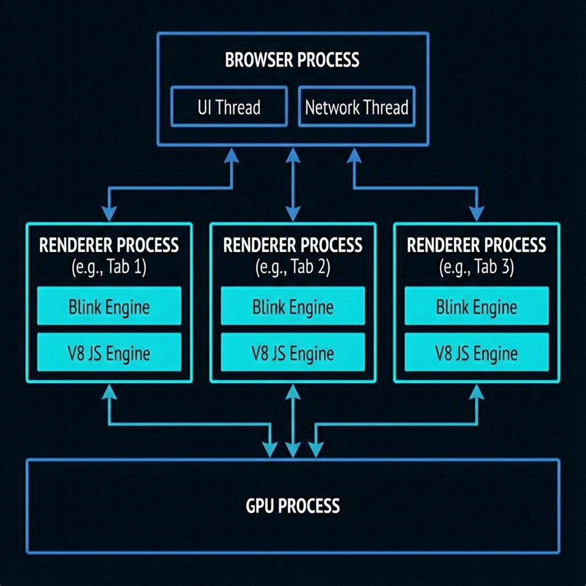
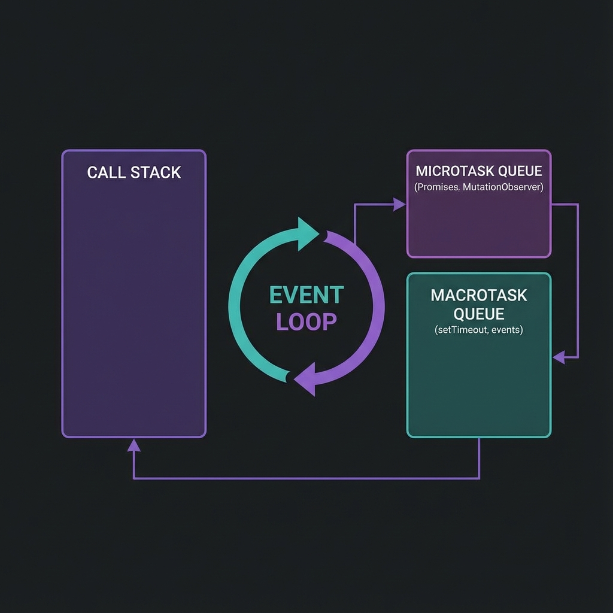
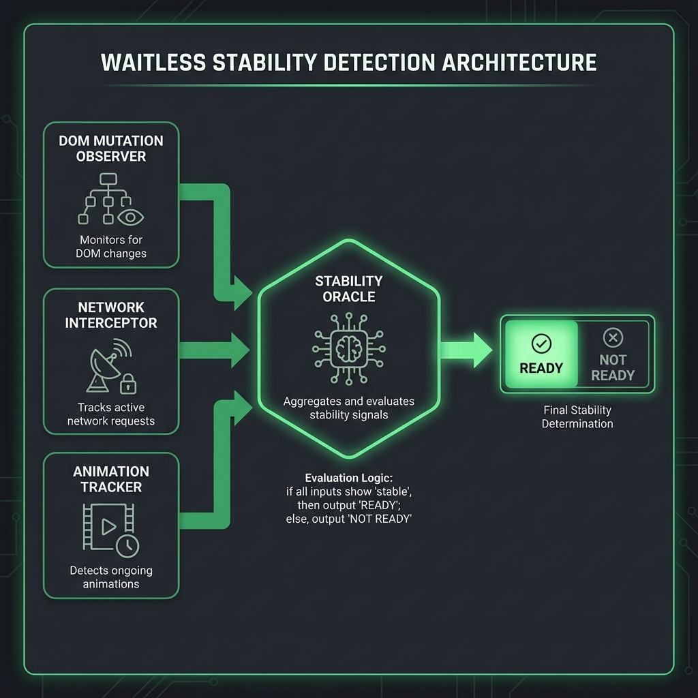
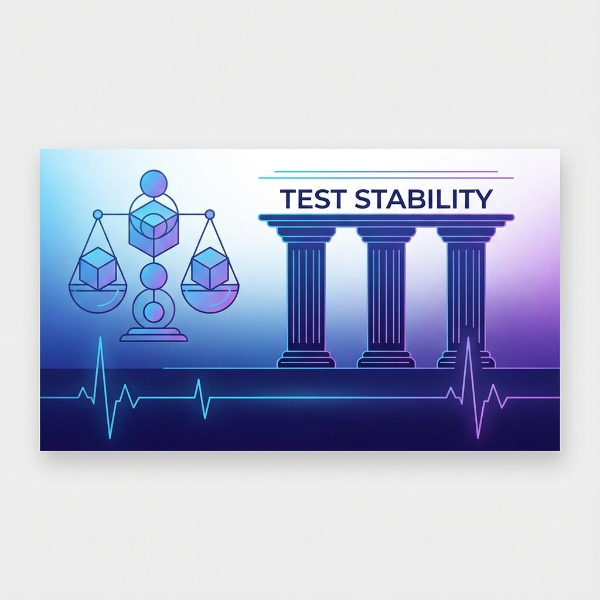
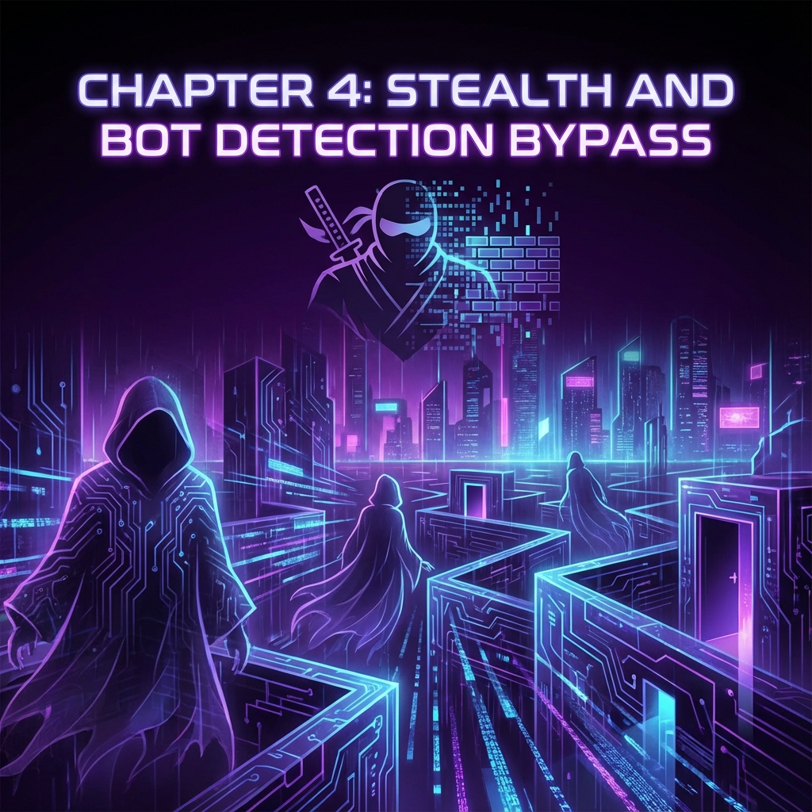
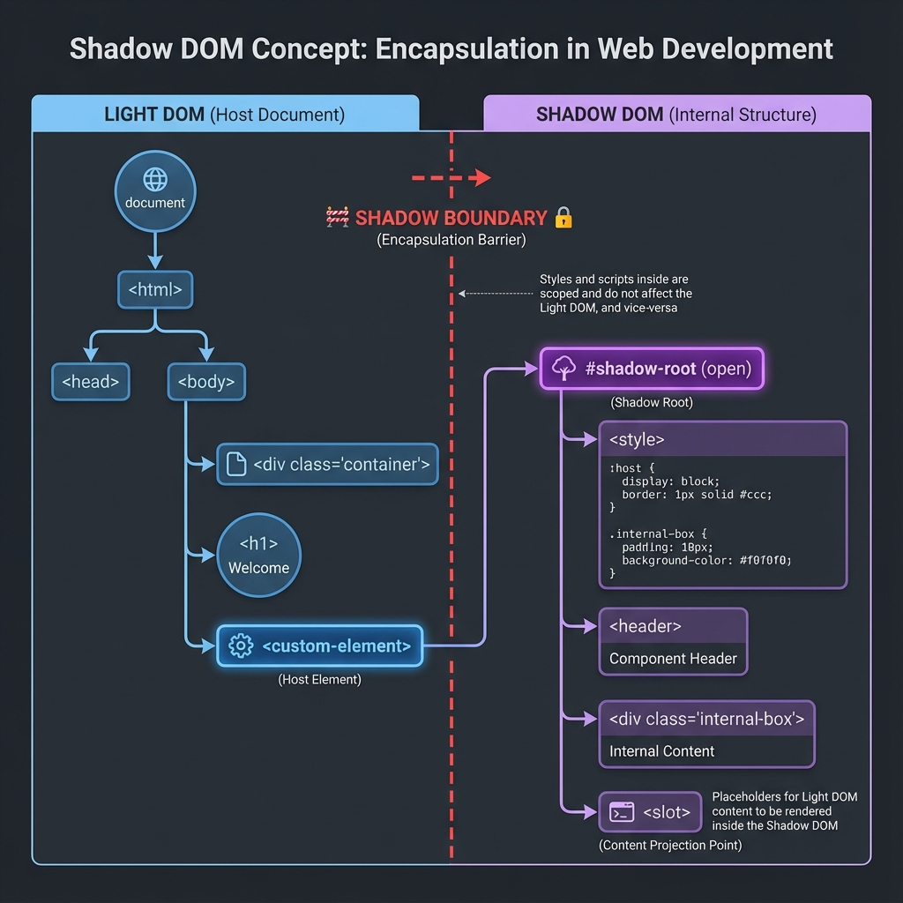

The maintained web edition of this book is at dhirajdas.dev/automation-book. This page is a copy kept with the source.
This book represents years of practical experience solving real automation challenges. The tools, patterns, and approaches described have been deployed and refined through countless iterations.
This playbook is for engineers moving from individual test scripts to dependable automation systems. You should be comfortable reading Python and basic HTML. If you are new to browser automation, start with the setup guide and Chapters 1–2; if you own a framework, begin with Chapters 17–18.
The central question is simple: what evidence would convince you that the system did the right thing? A green test, a quiet network, or a confident model response is only a signal. Good architecture connects those signals to an observable outcome.
| Your problem | Read next | Leave with |
|---|---|---|
| Tests pass locally and fail in CI | Chapters 1–3, then 18 | A failure classification and a reproducible waiting condition |
| UI changes keep breaking the suite | Chapters 4, 9–11, and 15 | Locator contracts and assertions that detect meaningful regressions |
| Your framework is expensive to maintain | Chapters 5–6 and 17–20 | A layering decision, isolated test data, and a measured execution budget |
| You are adding AI or autonomous tools | Chapters 12–13 and 23–25 | Separate integration tests, model evaluations, and agent execution checks |
Each chapter starts with an outcome and a practical checkpoint. Code fragments explain a technique; they are not a complete application or a promise of compatibility with every package version. Supply your own fixtures, URLs, credentials, and teardown. Check the linked project documentation, pin the versions you validate, and run examples in a disposable test environment.
The tools illustrate design decisions. Compare their behavior with the standard capabilities of your test framework before adding another dependency. Chapters 24–25 describe proposed architectures, with explicit limits and validation criteria.
Use a supported Python version compatible with the tools you choose, a current browser, Git, and an isolated virtual environment. For JavaScript examples, choose a supported Node.js LTS release from the official release schedule.
python --version
python -m venv .venv
# Activate on macOS / Linux:
source .venv/bin/activate
# Or in Windows PowerShell:
# .venv\Scripts\Activate.ps1
python -m pip install --upgrade pip
python -m pip install selenium pytest requests
python -m pip freeze > requirements.lock.txtCommit the dependency lock after validating your environment. Record the browser and operating-system versions alongside test artifacts so local and CI failures can be compared.
Selenium Manager is included in modern Selenium releases and resolves drivers when none is supplied. Restricted networks and offline CI may need pre-provisioned browser and driver binaries.
Save this as test_smoke.py and run python -m pytest -q. It uses an in-memory page, so it does not depend on an external application.
from urllib.parse import quote
from selenium import webdriver
from selenium.webdriver.common.by import By
def test_browser_smoke():
driver = webdriver.Chrome()
try:
html = "<title>Playbook lab</title><h1>Ready</h1>"
driver.get("data:text/html;charset=utf-8," + quote(html))
assert driver.title == "Playbook lab"
assert driver.find_element(By.TAG_NAME, "h1").text == "Ready"
finally:
driver.quit()Wait for the outcome relevant to your test. Page loading does not guarantee that application state is ready, and mixing implicit and explicit Selenium waits can make timeout behavior unpredictable. See Selenium waiting strategies and Playwright actionability checks. An actionable click still needs a business-result assertion.
"You cannot truly master a tool until you understand the substrate it operates on."
Before writing a single line of automation code, you need to understand what's actually happening inside the browser. This knowledge separates automation engineers who can debug any problem from those who copy-paste Stack Overflow answers and hope for the best.
Many browser automation failures become easier to diagnose when you understand rendering, events, and element lifecycles. Other failures come from test data, services, infrastructure, or the test itself.
ElementNotInteractableException — The browser says the element isn't readyStaleElementReferenceException — The DOM changed while you were looking at itTimeoutException — Something took longer than expectedUnderstanding browser internals transforms these from "random failures" into predictable, fixable problems.
Modern browsers like Chrome are not a single program—they're a collection of processes working together. This architecture was designed for security and stability, but it has profound implications for automation.

┌─────────────────────────────────────────────────────────────────────┐
│ BROWSER PROCESS │
│ • UI (tabs, address bar, bookmarks) │
│ • Network requests │
│ • Storage management │
│ • Inter-Process Communication (IPC) hub │
└────────────┬─────────────────────────────────────────┬──────────────┘
│ │
▼ ▼
┌────────────────────────────┐ ┌────────────────────────────┐
│ RENDERER PROCESS #1 │ │ RENDERER PROCESS #2 │
│ (Tab 1: example.com) │ │ (Tab 2: google.com) │
│ ┌──────────────────────┐ │ │ ┌──────────────────────┐ │
│ │ Blink Engine │ │ │ │ Blink Engine │ │
│ │ • HTML Parser │ │ │ │ • HTML Parser │ │
│ │ • CSS Engine │ │ │ │ • CSS Engine │ │
│ │ • Layout Engine │ │ │ │ • Layout Engine │ │
│ └──────────────────────┘ │ │ └──────────────────────┘ │
│ ┌──────────────────────┐ │ │ ┌──────────────────────┐ │
│ │ V8 JavaScript │ │ │ │ V8 JavaScript │ │
│ │ Engine │ │ │ │ Engine │ │
│ └──────────────────────┘ │ │ └──────────────────────┘ │
🔍 Deep Dive: V8 Bindings & The DOM Bridge
JavaScript doesn't "own" the DOM. The DOM lives in the C++ core of the browser engine (Blink). When you call
document.getElementById(), you're crossing a "bridge" from the JavaScript world (V8) to the C++
world. This context switching is expensive. In high-frequency automation, hundreds of these crossings occur
every second, creating a performance bottleneck that can look like network latency.
└────────────────────────────┘ └────────────────────────────┘
│
▼
┌────────────────────────────┐
│ GPU PROCESS │
│ • Compositing layers │
│ • WebGL rendering │
│ • Video decoding │
└────────────────────────────┘
Key Insight #1: Each tab is isolated
When you open a new browser window or tab in Selenium, you're potentially creating a new renderer process. Cookies, localStorage, and JavaScript state are shared per-origin, but memory and execution are isolated.
Key Insight #2: JavaScript runs in the renderer process
When you call driver.execute_script(), your JavaScript runs in the renderer process—the same place
the website's JavaScript runs. This is why you can access document, window, and the
DOM directly.
Key Insight #3: Network requests go through the browser process
This is why some bot detection techniques work—they can observe network behavior at the browser level, not just at the page level.
When you navigate to a URL, here's what happens inside the browser:
URL Entered → DNS Lookup → TCP Connection → TLS Handshake → HTTP Request → Response
The browser process handles this. The response (HTML, CSS, JS, images) streams back.
<!-- This HTML... -->
<html>
<body>
<div id="container">
<button id="submit">Click Me</button>
</div>
</body>
</html>
<!-- ...becomes this DOM tree -->
Document
└── html
└── body
└── div#container
└── button#submit
└── TextNode: "Click Me"
💡 Key Insight: The DOM is a live tree structure
When you call driver.find_element(By.ID, "submit"), Selenium traverses this tree. If the tree
changes (React re-renders, Ajax loads content), your reference might become "stale."
/* This CSS... */
#container {
display: flex;
}
button {
background: blue;
padding: 10px;
}
/* ...becomes the CSSOM */
StyleSheetList
└── CSSStyleSheet
└── #container { display: flex }
└── button { background: blue; padding: 10px }
The DOM and CSSOM combine to create the Render Tree—only visible elements are included:
RenderTree
└── RenderBody
└── RenderDiv (display: flex)
└── RenderButton (background: blue, padding: 10px)
└── RenderText: "Click Me"
💡 Key Insight: Elements with display: none are NOT in the render tree
This is why element.is_displayed() returns False for hidden elements—they literally
don't exist in the visual representation.
The browser calculates the exact position and size of every element:
button#submit:
x: 150px
y: 200px
width: 80px
height: 40px
⚠️ Common Pitfall: Layout is expensive
Every time the DOM changes, layout might need to recalculate. This is why tests that rapidly modify the DOM can become slow.
Finally, the browser:
A common automation mystery: The element is visible, but the click fails. This often happens because of thread contention. The Compositor Thread (which handles scrolling and some animations) is separate from the Main Thread (which handles JS and Layout). If the Main Thread is blocked by a long-running script, the browser can still scroll (compositor), but it cannot process a click (main thread). Automation stability requires the Main Thread to be "idle."
This is the most important concept for understanding flaky tests.

JavaScript in the browser runs on a single thread. There's no true parallelism—everything happens one step at a time. But it doesn't feel single-threaded because of the Event Loop.
┌─────────────────────────────────────────────────────────────────┐
│ EVENT LOOP │
│ │
│ ┌─────────────────┐ ┌────────────────────────────────────┐ │
│ │ Call Stack │ │ Task Queues │ │
│ │ │ │ ┌──────────────────────────────┐ │ │
│ │ Currently │◄───│ │ Macrotask Queue │ │ │
│ │ executing │ │ │ • setTimeout callbacks │ │ │
│ │ code │ │ │ • setInterval callbacks │ │ │
│ │ │ │ │ • I/O operations │ │ │
│ └─────────────────┘ │ │ • UI rendering │ │ │
│ │ └──────────────────────────────┘ │ │
│ │ ┌──────────────────────────────┐ │ │
│ │ │ Microtask Queue │ │ │
│ │ │ • Promise callbacks │ │ │
│ │ │ • MutationObserver │ │ │
│ │ │ • queueMicrotask() │ │ │
│ │ └──────────────────────────────┘ │ │
│ └────────────────────────────────────┘ │
└─────────────────────────────────────────────────────────────────┘
// Website code
button.addEventListener('click', async () => {
await fetch('/api/data'); // Network request
updateUI(); // Updates the DOM
});
When your Selenium test clicks the button:
fetch() starts a network request in the background ✓await and returns control immediately ✓The rest of the handler (updateUI()) only runs after the response arrives, when the awaited
Promise resolves and its continuation is queued as a microtask.
This is the #1 cause of flaky tests: assuming synchronous completion.
# ❌ BAD: Assumes synchronous completion
driver.find_element(By.ID, "button").click()
result = driver.find_element(By.ID, "result").text # May fail!
# ✅ GOOD: Waits for the expected outcome
driver.find_element(By.ID, "button").click()
WebDriverWait(driver, 10).until(
EC.text_to_be_present_in_element((By.ID, "result"), "Success")
)
┌──────────────────────────────────────────────────────────────────┐
│ PAGE LOADING TIMELINE │
├──────────────────────────────────────────────────────────────────┤
│ │
│ Navigation Start │
│ │ │
│ ▼ │
│ HTML starts downloading ─────────────────────┐ │
│ │ │ │
│ ▼ ▼ │
│ HTML fully parsed ◄─── DOMContentLoaded event fires │
│ │ │
│ ▼ │
│ CSS, JS, Images loading ─────────────────────┐ │
│ │ │ │
│ ▼ ▼ │
│ All resources loaded ◄───── load event fires │
│ │ │
│ ▼ │
│ Lazy resources, AJAX ─────────────────────────────┐ │
│ │ │ │
│ ▼ ▼ │
│ Fully interactive ◄───── NO STANDARD EVENT! │
│ │
└──────────────────────────────────────────────────────────────────┘
| Event | What's Ready | What's NOT Ready |
|---|---|---|
DOMContentLoaded |
HTML parsed, DOM built | CSS, images, fonts, external JS |
load |
All initial resources | Lazy-loaded content, AJAX data |
| (no event) | Everything | — |
Selenium's driver.get(url) waits for the load event by default. But modern single-page
applications often:
load)Your test starts after load, but the UI you need to interact with hasn't rendered yet!
# Strategy 1: Wait for specific elements
driver.get("https://example.com")
WebDriverWait(driver, 20).until(
EC.presence_of_element_located((By.ID, "main-content"))
)
# Strategy 2: Wait for network idle (using JavaScript)
driver.get("https://example.com")
driver.execute_script("""
return new Promise(resolve => {
if (document.readyState === 'complete') {
setTimeout(resolve, 500); // Small buffer for AJAX
} else {
window.addEventListener('load', () => setTimeout(resolve, 500));
}
});
""")
# Strategy 3: Use Waitless (covered in Chapter 3)
from waitless import stabilize
driver = stabilize(webdriver.Chrome())
driver.get("https://example.com") # Automatically waits for full stability
Understanding this communication protocol helps debug "weird" failures.
┌─────────────────┐ HTTP/REST ┌─────────────────┐
│ │─────────────────────│ │
│ Your Test │ {"using": "id", │ ChromeDriver │
│ (Python) │ "value": "btn"} │ (Executable) │
│ │◄────────────────────│ │
└─────────────────┘ {"value": {...}} └────────┬────────┘
│
│ Chrome DevTools
│ Protocol (CDP)
│
┌───────▼────────┐
│ │
│ Chrome │
│ Browser │
│ │
└────────────────┘
element = driver.find_element(By.ID, "submit-button")
json
POST /session/{sessionId}/element
{"using": "css selector", "value": "#submit-button"}
document.querySelector("#submit-button")json
{"value": {"element-6066-11e4-a52e-4f735466cecf": "abc123"}}
WebElement objectThat "abc123" is a reference ID. If the DOM element is removed and re-added (common
in React/Vue/Angular), the old reference ID is invalid—hence StaleElementReferenceException.
Selenium 4 introduced direct CDP access, unlocking powerful capabilities:
# Traditional WebDriver (limited)
driver.get("https://example.com")
# Direct CDP access (powerful)
driver.execute_cdp_cmd("Network.enable", {})
driver.execute_cdp_cmd("Network.setExtraHTTPHeaders", {
"headers": {"X-Custom-Header": "my-value"}
})
# Listen to network events
driver.execute_cdp_cmd("Network.enable", {})
# Now you can capture all network requests/responses
| Domain | Capabilities |
|---|---|
Network |
Intercept requests, mock responses, throttle bandwidth |
DOM |
Query/modify DOM, track mutations |
Performance |
Collect metrics, trace execution |
Console |
Capture console.log output |
Emulation |
Spoof device, geolocation, timezone |
Every Selenium command (e.g., element.is_displayed()) is an out-of-process network call. Even
on localhost, there is overhead for serialization, network transmission, and deserialization. When you put a
find_element call inside a tight loop, you're not just waiting for the browser; you're paying a
"tax" of 5-10ms per call just for the communication protocol itself. This is why batching interactions in
JavaScript (using execute_script) is often 10x faster for complex tasks.
Let's apply what we've learned:
from selenium import webdriver
from selenium.webdriver.common.by import By
import time
driver = webdriver.Chrome()
# 1. Navigate and observe loading
driver.get("https://example.com")
print(f"Page load complete. Title: {driver.title}")
# 2. Explore the DOM
dom_html = driver.execute_script("return document.documentElement.outerHTML.length")
print(f"Total DOM size: {dom_html} characters")
# 3. Check event loop status
pending_tasks = driver.execute_script("""
return {
readyState: document.readyState,
animationsPending: document.getAnimations().filter(a => a.playState === 'running').length
}
""")
print(f"Document state: {pending_tasks['readyState']}")
print(f"Running animations: {pending_tasks['animationsPending']}")
# 4. Monitor a mutation
driver.execute_script("""
window.__mutations = [];
const observer = new MutationObserver(mutations => {
mutations.forEach(m => window.__mutations.push(m.type));
});
observer.observe(document.body, {childList: true, subtree: true});
""")
# Make a DOM change
driver.execute_script("document.body.innerHTML += '<div>Test</div>'")
mutations = driver.execute_script("return window.__mutations")
print(f"Mutations observed: {mutations}")
driver.quit()
Expected Output:
Page load complete. Title: Example Domain
Total DOM size: 1234 characters
Document state: complete
Running animations: 0
Mutations observed: ['childList']
| Concept | Key Takeaway |
|---|---|
| Multi-Process Architecture | Each tab runs in isolation; crashes don't affect other tabs |
| Rendering Pipeline | HTML → DOM → CSSOM → Render Tree → Layout → Paint |
| Event Loop | Single-threaded but async; explains why clicks don't wait |
| Page Load Events | load event fires before AJAX content is ready |
| WebDriver Protocol | HTTP/JSON commands translated to CDP |
| Stale Elements | DOM changes invalidate element references |
Coming up next: Now that you understand the platform, let's explore why tests fail unpredictably—and how to analyze the root cause.
Flaky tests are the silent killers of automation credibility. A test that passes on Monday, fails on Tuesday, and passes again on Wednesday—with zero code changes—destroys trust faster than any bug in production.
Consider these statistics from real enterprise environments:
| Metric | Impact |
|---|---|
| Developer time investigating false failures | 4-6 hours/week per engineer |
| Pipeline re-runs due to flaky tests | 15-25% of all runs |
| Confidence in test results | Drops below 60% |
| Time to detect real bugs | Increases by 40% |
When developers stop trusting test results, they stop looking at them. The automation suite becomes expensive decoration.
Every flaky test has a deterministic root cause. The test isn't "randomly" failing—it's failing because of specific conditions that aren't always present. Your job is to find those conditions.
Sometimes the browser itself stops responding for a few milliseconds. This happens during Garbage Collection (GC)—when V8 pauses execution to clean up memory—or Just-In-Time (JIT) Compilation. These "micro-stutters" are nearly invisible to humans but can cause a race condition to trigger in automation if the browser pauses exactly when a click is being sent. Stable automation builds in a small buffer for these unavoidable internal pauses.
The browser and test script operate at different speeds. The script says "click the button" before the button is ready.
Symptoms:
ElementNotInteractableExceptionStaleElementReferenceExceptionExample of the Problem:
# This code has a race condition
driver.get("https://app.example.com/dashboard")
driver.find_element(By.ID, "submit-btn").click() # May fail!
The page is still loading when the click executes. The element might:
🔍 Deep Dive: Why Event Handlers Aren't Attached Immediately
<button id="submit-btn">Submit</button>
<script>
// This runs after the button exists in DOM
document.getElementById('submit-btn').addEventListener('click', handleClick);
</script>
The button is in the DOM immediately, but the event listener is only attached when the
<script> executes. If your test clicks before the script runs, nothing happens!
Solution Pattern:
from selenium.webdriver.support.ui import WebDriverWait
from selenium.webdriver.support import expected_conditions as EC
# Wait for element to be clickable (visible + enabled)
wait = WebDriverWait(driver, 10)
button = wait.until(EC.element_to_be_clickable((By.ID, "submit-btn")))
button.click()
API calls complete at different speeds. A dashboard that loads in 200ms locally might take 2 seconds in CI.
Symptoms:
Why CI Is Different:
| Factor | Local Development | CI Environment |
|---|---|---|
| Network Latency | Near-zero (localhost) | Variable (shared infra) |
| CPU | Dedicated | Shared with other jobs |
| Memory | Abundant | Often limited |
| Browser Startup | Instant (browser cached) | Cold start each time |
Solution Pattern:
# ❌ BAD: Fixed timeout too short
wait = WebDriverWait(driver, 3)
# ✅ GOOD: Generous timeout with early exit
wait = WebDriverWait(driver, 30) # Will return early if condition met
element = wait.until(EC.presence_of_element_located((By.ID, "data-loaded")))
CSS transitions and JavaScript animations don't block Selenium. The test clicks where the button will be, not where it is.
Example:
.modal {
transition: transform 0.3s ease-in-out;
transform: translateY(-100%);
}
.modal.open {
transform: translateY(0);
}
The modal slides in over 300ms. Selenium doesn't wait for CSS transitions.
🔍 Deep Dive: How Animations Break Clicks
opacity > 0 and display != none
Solution Pattern:
from selenium import webdriver
from selenium.common.exceptions import JavascriptException
# Wait for all finite animations to complete
def wait_for_animations(driver, timeout=5):
driver.execute_script("""
const deadline = performance.now() + arguments[0] * 1000;
return new Promise((resolve, reject) => {
const checkAnimations = () => {
const running = document.getAnimations().filter(a =>
a.playState === 'running' &&
// Skip infinite animations such as spinners: they never finish
a.effect.getComputedTiming().endTime !== Infinity
);
if (running.length === 0) {
resolve();
} else if (performance.now() > deadline) {
reject(new Error(running.length + ' animation(s) still running'));
} else {
requestAnimationFrame(checkAnimations);
}
};
checkAnimations();
});
""", timeout)
# Usage
driver.find_element(By.CLASS_NAME, "open-modal").click()
wait_for_animations(driver)
modal_button = driver.find_element(By.ID, "modal-confirm")
modal_button.click()
Solution Patterns:
# 1. Mock external services
@pytest.fixture
def mock_payment_gateway():
with responses.RequestsMock() as rsps:
rsps.add(
responses.POST,
"https://api.stripe.com/v1/charges",
json={"id": "ch_test123", "status": "succeeded"},
status=200
)
yield rsps
# 2. Isolate database
@pytest.fixture
def isolated_db_session():
# Create unique schema per test
schema_name = f"test_{uuid.uuid4().hex[:8]}"
create_schema(schema_name)
yield schema_name
drop_schema(schema_name)
# 3. Control time
from freezegun import freeze_time
@freeze_time("2024-06-15 14:30:00")
def test_discount_during_sale_period():
# Time-sensitive logic now predictable
assert calculate_discount() == 0.20
Symptoms:
Solution Patterns:
# 1. Request dedicated CI resources
# .github/workflows/test.yml
jobs:
test:
runs-on: ubuntu-latest
timeout-minutes: 30
env:
CHROME_ARGS: "--disable-dev-shm-usage --no-sandbox"
# 2. Limit parallel browser instances
# pytest.ini
[pytest]
# Max 4 parallel workers (pytest.ini comments must be on their own line)
addopts = -n 4
# 3. Add resource monitoring
import psutil
def check_system_resources():
memory = psutil.virtual_memory()
if memory.percent > 90:
logging.warning(f"High memory usage: {memory.percent}%")
# Consider failing fast rather than flaking
driver.get("https://app.example.com/dashboard")
time.sleep(5) # "This should be enough time"
driver.find_element(By.ID, "submit-btn").click()
Problems:
from selenium.webdriver.support.ui import WebDriverWait
from selenium.webdriver.support import expected_conditions as EC
wait = WebDriverWait(driver, 10)
element = wait.until(
EC.element_to_be_clickable((By.ID, "submit-btn"))
)
element.click()
Improvements:
Remaining Problems:
class all_animations_complete:
def __call__(self, driver):
return driver.execute_script("""
return document.getAnimations().every(a =>
a.playState === 'finished' || a.playState === 'idle'
);
""")
wait.until(all_animations_complete())
Problems:
Before jumping to solutions, you need to diagnose the specific cause of flakiness.
Run the flaky test 50+ times and analyze patterns:
# pytest_flaky_tracker.py
import pytest
import json
from datetime import datetime
RESULTS_FILE = "flaky_analysis.json"
@pytest.hookimpl(hookwrapper=True)
def pytest_runtest_makereport(item, call):
outcome = yield
report = outcome.get_result()
if call.when == "call":
result = {
"test": item.name,
"timestamp": datetime.now().isoformat(),
"passed": report.passed,
"duration": report.duration,
"error": str(report.longrepr) if report.failed else None
}
# Append to results file
try:
with open(RESULTS_FILE, "r") as f:
data = json.load(f)
except FileNotFoundError:
data = []
data.append(result)
with open(RESULTS_FILE, "w") as f:
json.dump(data, f, indent=2)
Run analysis:
for i in {1..50}; do pytest test_flaky.py --tb=short; done
python analyze_flaky.py # Analyze patterns
@pytest.fixture
def driver(request):
driver = webdriver.Chrome()
yield driver
# Capture screenshot on failure
if request.node.rep_call.failed:
screenshot_dir = Path("screenshots")
screenshot_dir.mkdir(exist_ok=True)
filename = f"{request.node.name}_{datetime.now():%Y%m%d_%H%M%S}.png"
driver.save_screenshot(str(screenshot_dir / filename))
driver.quit()
@pytest.hookimpl(tryfirst=True, hookwrapper=True)
def pytest_runtest_makereport(item, call):
outcome = yield
rep = outcome.get_result()
setattr(item, f"rep_{rep.when}", rep)
# Resource Timing only lists requests that have already finished,
# so it cannot show pending ones. Count them in the page instead.
TRACKER = """
window.__pending_requests = 0;
const originalFetch = window.fetch;
window.fetch = (...args) => {
window.__pending_requests++;
return originalFetch(...args).finally(() => window.__pending_requests--);
};
const originalSend = XMLHttpRequest.prototype.send;
XMLHttpRequest.prototype.send = function (...args) {
window.__pending_requests++;
this.addEventListener('loadend', () => window.__pending_requests--, { once: true });
return originalSend.apply(this, args);
};
"""
def enable_network_logging(driver):
# Chrome only: runs the tracker before the page's own scripts on every load
driver.execute_cdp_cmd("Page.addScriptToEvaluateOnNewDocument", {"source": TRACKER})
def get_pending_requests(driver):
return driver.execute_script("return window.__pending_requests || 0")
| Flakiness Category | Percentage | Primary Solution |
|---|---|---|
| Race Conditions | 40% | Explicit waits for expected state |
| Network Variability | 25% | Generous timeouts, network mocking |
| Animation Interference | 15% | Wait for getAnimations() to settle |
| External Dependencies | 10% | Mock services, isolate data |
| Resource Contention | 10% | Dedicated resources, monitoring |
The Ultimate Solution: In the next chapter, we'll introduce Waitless, which addresses race conditions, network variability, AND animation interference automatically—with no code changes required.
Instead of telling Selenium when to wait, Waitless instruments the browser itself to detect when waiting is no longer needed.
Traditional approaches ask: "What should I wait for?"
Waitless asks: "What signals indicate the page is stable?"
The four signals of stability:
The default normal mode waits for the DOM and the network. strict mode also waits for
animations and layout. When the checks for the chosen mode pass, the page is ready for interaction.

┌─────────────────────────────────────────────────────────────────┐
│ YOUR TEST CODE │
│ driver.find_element(By.ID, "btn").click() │
└─────────────────────────────────────────────────────────────────┘
│
▼
┌─────────────────────────────────────────────────────────────────┐
│ WAITLESS WRAPPER │
│ • Intercepts all WebDriver commands │
│ • Injects stability checks before each action │
│ • No code changes required in your tests │
└─────────────────────────────────────────────────────────────────┘
│
▼
┌─────────────────────────────────────────────────────────────────┐
│ BROWSER-SIDE INSTRUMENTATION │
│ ┌─────────────────┐ ┌─────────────────┐ ┌─────────────────┐ │
│ │ Mutation │ │ Network │ │ Animation │ │
│ │ Observer │ │ Interceptor │ │ Tracker │ │
│ │ │ │ │ │ │ │
│ │ Watches DOM │ │ Tracks XHR & │ │ Monitors CSS & │ │
│ │ changes via │ │ Fetch pending │ │ JS animations │ │
│ │ MutationObserver│ │ requests │ │ │ │
│ └─────────────────┘ └─────────────────┘ └─────────────────┘ │
│ │ │
│ ▼ │
│ STABILITY ORACLE │
│ "Is everything settled? Yes → Proceed" │
└─────────────────────────────────────────────────────────────────┘
pip install waitless
from selenium import webdriver
from selenium.webdriver.common.by import By
from waitless import stabilize
# Wrap your driver once at the start
driver = stabilize(webdriver.Chrome())
# get, find_element and click now wait for the page to settle
driver.get("https://app.example.com/login")
driver.find_element(By.ID, "email").send_keys("user@example.com")
driver.find_element(By.ID, "login-btn").click()
driver.find_element(By.ID, "load").click() # starts a slow fetch
print(driver.find_element(By.CSS_SELECTOR, "#results .result").text) # waits for it
driver.quit()
That's it. No explicit waits. No sleep statements. The driver automatically waits for stability before every action. New in v0.3.0+: Waitless also observes open Shadow DOM roots, so changes inside web components count too. Closed shadow roots cannot be observed.
The MutationObserver API watches for changes to the DOM tree:
// Simplified sketch of what Waitless injects
// (the real script keeps its state in window.__waitless__)
(function() {
window.__waitless_last_mutation = Date.now();
window.__waitless_mutation_count = 0;
const observer = new MutationObserver((mutations) => {
window.__waitless_mutation_count += mutations.length;
window.__waitless_last_mutation = Date.now();
});
observer.observe(document.body, {
childList: true, // Watch for added/removed elements
subtree: true, // Watch entire DOM tree
attributes: true, // Watch attribute changes
characterData: true // Watch text content changes
});
})();
Stability Criteria: No mutations for 100ms (configurable).
Why 100ms? React, Vue, and Angular typically batch multiple DOM updates within a single animation frame (16ms). The 100ms buffer ensures all related updates have completed.
Waitless intercepts XMLHttpRequest and fetch to track pending requests:
// Simplified sketch: XMLHttpRequest interception
(function() {
window.__waitless_pending_requests = 0;
const originalXHROpen = XMLHttpRequest.prototype.open;
const originalXHRSend = XMLHttpRequest.prototype.send;
XMLHttpRequest.prototype.open = function(...args) {
this.__waitless_url = args[1];
return originalXHROpen.apply(this, args);
};
XMLHttpRequest.prototype.send = function(...args) {
window.__waitless_pending_requests++;
this.addEventListener('loadend', () => {
window.__waitless_pending_requests--;
});
return originalXHRSend.apply(this, args);
};
// Fetch interception
const originalFetch = window.fetch;
window.fetch = function(...args) {
window.__waitless_pending_requests++;
return originalFetch.apply(this, args)
.finally(() => {
window.__waitless_pending_requests--;
});
};
})();
Stability Criteria: Zero pending requests.
Tracks CSS animations and JavaScript animations:
// Simplified sketch of the animation tracker
(function() {
window.__waitless_active_animations = 0;
// CSS Animation tracking
document.addEventListener('animationstart', () => {
window.__waitless_active_animations++;
});
document.addEventListener('animationend', () => {
window.__waitless_active_animations--;
});
document.addEventListener('transitionstart', () => {
window.__waitless_active_animations++;
});
document.addEventListener('transitionend', () => {
window.__waitless_active_animations--;
});
})();
// Web Animations API check
const getActiveAnimations = () => {
return document.getAnimations().filter(a =>
a.playState === 'running'
).length;
};
Stability Criteria: Zero running animations (checked in strict mode).
All settings live in StabilizationConfig. Times are in seconds.
from selenium import webdriver
from waitless import stabilize, StabilizationConfig
config = StabilizationConfig(
timeout=15, # seconds before StabilizationTimeout is raised
dom_settle_time=0.1, # seconds the DOM must stay quiet
network_idle_threshold=0, # pending XHR/fetch requests still allowed
animation_detection=True, # track CSS animations and transitions
strictness="normal", # "strict", "normal" or "relaxed"
poll_interval=0.05, # seconds between stability checks
)
driver = stabilize(webdriver.Chrome(), config=config)
# Or start from a preset
strict_config = StabilizationConfig.strict() # DOM, network, animations, layout
relaxed_config = StabilizationConfig.relaxed() # DOM only
ci_config = StabilizationConfig.ci() # longer timeout, debug logging
| Scenario | Adjustment |
|---|---|
| Very slow API responses | Increase timeout |
| Clicks land while an element is still moving | Use strictness="strict" so animations and layout must settle too |
| Analytics or polling keeps the network busy | Raise network_idle_threshold (for example to 2) |
| Infinite spinners or animated backgrounds | Set animation_detection=False |
| Need faster feedback | Decrease poll_interval (use cautiously) |
When the page never settles, Waitless raises StabilizationTimeout. The diagnostics tell you which signal was still busy:
from selenium import webdriver
from selenium.webdriver.common.by import By
from waitless import stabilize, StabilizationConfig, StabilizationTimeout, get_diagnostics
from waitless.diagnostics import print_report
driver = stabilize(webdriver.Chrome(), config=StabilizationConfig(timeout=3))
driver.get("https://app.example.com/dashboard")
driver.execute_script("fetch('/slow')") # a request that takes 8 seconds
try:
driver.find_element(By.ID, "email").click()
except StabilizationTimeout:
diagnostics = get_diagnostics(driver)
print(diagnostics["blocking_factors"]) # which signal was still busy
print_report(diagnostics) # readable report with suggestions
finally:
driver.quit()
Example output (shortened):
UI did not stabilize within 3.0s. Blocking: ['pending_requests']
| SIGNAL STATUS: |
| [OK] [M] DOM_MUTATIONS: Mutation rate: 0/sec (threshold: 50/se |
| [WAIT] [M] NETWORK_REQUESTS: 1 pending request(s) (threshold: |
| [OK] [O] CSS_ANIMATIONS: 0 active animation(s) |
| SUGGESTIONS: |
| 1. Network requests are blocking stability. If your app has |
| background traffic (analytics, polling), consider: |
| config = StabilizationConfig(network_idle_threshold=2) |
This tells you the page wasn't stable because a request was still pending. Save the diagnostics to a JSON file and run python -m waitless doctor --file diagnostics.json to get the same report from the command line.

Use the following figures as illustrative examples, not independently verified benchmarks. Record your baseline, workload, versions, and repeat runs before attributing a gain to a tool.
Before Waitless:
Test Suite: checkout_flow (5 tests)
├── test_add_to_cart PASSED
├── test_update_quantity FAILED (StaleElementReference)
├── test_apply_coupon PASSED
├── test_checkout FAILED (ElementNotInteractable)
└── test_payment PASSED
Run 1: 60% pass rate
Run 2: 80% pass rate
Run 3: 40% pass rate
Average: 60% (Expected: 100%)
Re-runs required: 3-4 per CI pipeline
After Waitless:
Test Suite: checkout_flow (5 tests)
├── test_add_to_cart PASSED
├── test_update_quantity PASSED
├── test_apply_coupon PASSED
├── test_checkout PASSED
└── test_payment PASSED
Run 1-100: 100% pass rate
Flaky failures eliminated: 100%
Re-runs required: 0
If your app keeps requests open (long polling) or sends constant background requests, the network may never look idle and you get StabilizationTimeout. WebSocket and SSE tracking is off by default, so open sockets do not block unless you turn tracking on.
Loading spinners and animated backgrounds never "complete." In normal mode animations do not block, but strict mode waits for them.
Google Analytics, Hotjar, and other analytics tools make constant requests. Waitless has no URL ignore list, so allow a small number of pending requests instead.
Solutions:
from waitless import StabilizationConfig
# Background polling or analytics: allow a few requests to stay pending
polling_config = StabilizationConfig(network_idle_threshold=2)
# Infinite spinners: stop tracking animations
spinner_config = StabilizationConfig(animation_detection=False)
# WebSocket and SSE tracking is off by default. Turn it on only when you
# want a quiet socket to be part of "stable".
socket_config = StabilizationConfig(track_websocket=True, websocket_quiet_time=0.5)
Create a test that demonstrates Waitless in action:
from selenium import webdriver
from selenium.webdriver.common.by import By
from waitless import stabilize, StabilizationConfig, get_diagnostics
# Setup with custom config
config = StabilizationConfig(
dom_settle_time=0.2, # extra buffer for this exercise
timeout=10,
)
driver = stabilize(webdriver.Chrome(), config=config)
try:
# Test 1: Dynamic content loading
driver.get("https://jsonplaceholder.typicode.com/")
# find_element waits for the page to settle first
title = driver.find_element(By.TAG_NAME, "h1").text
print(f"✓ Page loaded. Title: {title}")
# Check what Waitless saw on its last check
diagnostics = get_diagnostics(driver)
print(f" Stable on last check: {diagnostics['last_status']['is_stable']}")
# Test 2: Navigating to a different page
driver.get("https://httpbin.org/html")
content = driver.find_element(By.TAG_NAME, "p").text[:50]
print(f"✓ Second page loaded. Content preview: {content}...")
print("\n✅ All steps passed with automatic stability detection!")
finally:
driver.quit()
| Feature | Benefit |
|---|---|
| Automatic stability detection | No manual waits needed |
| DOM mutation tracking | Catches React/Vue re-renders |
| Network request tracking | Waits for AJAX to complete |
| Animation awareness | Prevents mid-animation clicks |
| Zero code changes | Works with existing tests |
| Configurable thresholds | Tune for your app's behavior |
Key Takeaway: Waitless shifts the waiting logic from your tests to the browser itself. Instead of guessing when to wait, it observes actual browser activity and proceeds only when truly stable.
Coming up next: Now that we've eliminated flakiness in functional tests, let's tackle visual testing—because a button working isn't the same as a button looking right.
"A user doesn't interact with the DOM—they interact with pixels. Test accordingly."
Functional tests verify that buttons click and forms submit. They don't verify that:
A user sees pixels, not DOM elements. Visual testing validates what users actually experience.
| Bug Type | Functional Test Result | User Experience |
|---|---|---|
| Button moved 200px left | ✅ PASS (still clickable) | "Where's the buy button?" |
| Text color matches background | ✅ PASS (text exists in DOM) | "I can't read anything!" |
| Modal renders behind overlay | ✅ PASS (elements exist) | "The site is frozen!" |
| Font failed to load | ✅ PASS (text displays) | "This looks unprofessional" |
| Mobile layout broken | ✅ PASS (desktop tested) | 50% of users can't use site |
Traditional visual testing compares screenshots pixel-by-pixel:
# Naive approach
from PIL import ImageChops
def compare_images(baseline, current):
diff = ImageChops.difference(baseline, current)
return diff.getbbox() is None # True if identical
Problems with this approach:
Two images can be:
We need algorithms that match human perception, not bit comparison.
Visual Guard uses perceptual comparison algorithms that mimic how humans see:
SSIM doesn't compare pixels—it compares the structure of images:
SSIM analyzes three components:
1. Luminance (l) - Overall brightness comparison
2. Contrast (c) - Variation in brightness
3. Structure (s) - Patterns and edges
Final Score = l^α × c^β × s^γ
Where α, β, γ are weights (typically all 1)
🔍 Deep Dive: How SSIM Works
┌─────────────────────────────────────────────────────────────────┐
│ SSIM COMPARISON PROCESS │
├─────────────────────────────────────────────────────────────────┤
│ │
│ BASELINE IMAGE CURRENT IMAGE │
│ ┌─────────────────┐ ┌─────────────────┐ │
│ │ ░░░░░░░░░░░░░░ │ │ ░░░░░░░░░░░░░░ │ │
│ │ ░░▓▓▓▓▓▓▓▓░░░░ │ │ ░░▓▓▓▓▓▓▓▓░░░░ │ │
│ │ ░░▓▓▓▓▓▓▓▓░░░░ │ │ ░░▓▓▓▓▓▓▓▓░░░░ │ │
│ │ ░░░░░░░░░░░░░░ │ │ ░░░░░░░░░░░░░░ │ │
│ └─────────────────┘ └─────────────────┘ │
│ │ │ │
│ └──────────┬───────────────┘ │
│ ▼ │
│ ┌─────────────────────┐ │
│ │ For each window: │ │
│ │ • Mean (μ) │ │
│ │ • Variance (σ²) │ │
│ │ • Covariance (σxy) │ │
│ └─────────────────────┘ │
│ │ │
│ ▼ │
│ ┌─────────────────────┐ │
│ │ Calculate SSIM: │ │
│ │ (2μxμy + C1)(2σxy + C2) │
│ │ ───────────────────────── │
│ │ (μx² + μy² + C1)(σx² + σy² + C2) │
│ └─────────────────────┘ │
│ │ │
│ ▼ │
│ SSIM Score: 0.97 │
│ (1.0 = identical, 0.0 = completely different) │
│ │
└─────────────────────────────────────────────────────────────────┘
Why SSIM is better for visual testing:
pHash creates a "fingerprint" of the image that's resistant to minor changes:
# How pHash works conceptually
def perceptual_hash(image):
# 1. Resize to small square (32x32)
small = resize(image, 32, 32)
# 2. Convert to grayscale
gray = grayscale(small)
# 3. Apply Discrete Cosine Transform (DCT)
dct = discrete_cosine_transform(gray)
# 4. Keep only low-frequency components (top-left 8x8)
low_freq = dct[:8, :8]
# 5. Compute average (excluding the DC term, the top-left value)
values = low_freq.flatten()
avg = average(values[1:])
# 6. Create hash: 1 if above average, 0 if below
hash = "".join("1" if v > avg else "0" for v in values)
return hash # 64-bit string like "1010110010..."
Comparing with pHash:
# Hamming distance = number of different bits
hash1 = "10101100..." # Baseline
hash2 = "10101110..." # Current (only 1 bit different)
hamming_distance = 1 # Very similar!
# Threshold: distance < 10 means same image
pip install visual-guard
The package installs Pillow, ImageHash and scikit-image, so pixel, pHash and SSIM comparisons all work out of the box. You import it as visual_guard.
from selenium import webdriver
from visual_guard import VisualTester
driver = webdriver.Chrome()
driver.set_window_size(1280, 900) # keep the size fixed so images line up
driver.get("https://example.com")
tester = VisualTester(baseline_dir="baselines", snapshot_dir="snapshots")
# First run: saves baselines/homepage.png and returns True.
# Later runs: compares against it and saves a diff image on failure.
passed = tester.assert_matches(
driver, # a WebDriver, WebElement, PNG bytes or a file path
"homepage",
method="ssim", # "pixel", "ssim" or "phash"
threshold=5, # SSIM: allowed difference in percent (score of 0.95 or better)
)
if passed:
print("Visual check passed!")
else:
print("Visual regression detected! See snapshots/diffs/homepage_diff.png")
driver.quit()
assert_matches returns True or False. The threshold depends on the method: for "pixel" and "ssim" it is the allowed difference in percent, and for "phash" it is the allowed Hamming distance between the two hashes (0 to 64).
Real applications have dynamic content: timestamps, usernames, advertisements. Visual Guard lets you exclude regions from the comparison:
from selenium import webdriver
from selenium.webdriver.common.by import By
from visual_guard import VisualTester
driver = webdriver.Chrome()
driver.set_window_size(1280, 900)
driver.get("https://app.example.com/dashboard")
tester = VisualTester(baseline_dir="baselines", snapshot_dir="snapshots")
# Fixed area by coordinates: (x, y, width, height)
header_clock = (800, 10, 150, 30)
# An element's area, taken from its position on the page
# (on high DPI screens, multiply by window.devicePixelRatio)
r = driver.find_element(By.ID, "email").rect
email_box = (int(r["x"]), int(r["y"]), int(r["width"]), int(r["height"]))
# Masked areas are painted out in both images before comparing
passed = tester.assert_matches(
driver, "dashboard", method="ssim", threshold=5,
exclude_regions=[header_clock, email_box],
)
driver.quit()
Visual Guard does not discover dynamic regions for you. A quick way to find them is to load the same page twice and compare with zero tolerance. The diff image shows everything that changed between the two loads:
import time
from selenium import webdriver
from visual_guard import VisualTester
driver = webdriver.Chrome()
driver.set_window_size(1280, 900)
tester = VisualTester(baseline_dir="probe/baselines", snapshot_dir="probe/snapshots")
# Load the page twice and compare with zero tolerance.
driver.get("https://app.example.com/dashboard")
tester.assert_matches(driver, "dashboard_probe", method="pixel", threshold=0)
time.sleep(3)
driver.refresh()
same = tester.assert_matches(driver, "dashboard_probe", method="pixel", threshold=0)
if not same:
print("Dynamic areas are highlighted in probe/snapshots/diffs/dashboard_probe_diff.png")
driver.quit()
Visual Guard compares images; it does not start browsers. Create each browser and window size with Selenium and give each combination its own baseline name:
from selenium import webdriver
from visual_guard import VisualTester
viewports = [(1920, 1080), (768, 1024), (375, 812)]
tester = VisualTester(baseline_dir="baselines/responsive", snapshot_dir="snapshots/responsive")
for width, height in viewports:
options = webdriver.ChromeOptions()
options.add_argument(f"--window-size={width},{height}")
driver = webdriver.Chrome(options=options)
driver.get("https://example.com")
# Each browser and size gets its own baseline
name = f"homepage_chrome_{width}x{height}"
passed = tester.assert_matches(driver, name, method="ssim", threshold=5)
print(f"{name}: {'PASS' if passed else 'FAIL'}")
driver.quit()
For other browsers, repeat the loop with webdriver.Firefox() or webdriver.Edge() and put the browser name in the baseline name. Never compare a Firefox screenshot against a Chrome baseline.
For pages with scroll, give Visual Guard a full page image. One simple way in Chrome is to make the window as tall as the page:
from selenium import webdriver
from visual_guard import VisualTester
driver = webdriver.Chrome()
driver.get("https://en.wikipedia.org/wiki/Software_testing")
tester = VisualTester(baseline_dir="baselines", snapshot_dir="snapshots")
# Make the window as tall as the page, then take one screenshot
# (most reliable in headless mode, where the window is not limited by the screen)
height = driver.execute_script("return document.documentElement.scrollHeight")
driver.set_window_size(1280, height)
passed = tester.assert_matches(driver, "long_page", method="phash", threshold=8)
driver.quit()
Firefox can also return a full page image directly with driver.get_full_page_screenshot_as_png(), which you can pass to assert_matches as PNG bytes.
import os
from selenium import webdriver
from visual_guard import VisualTester, SimpleReporter
driver = webdriver.Chrome()
driver.set_window_size(1280, 900)
tester = VisualTester(baseline_dir="baselines", snapshot_dir="snapshots")
reporter = SimpleReporter(title="Visual Regression Report")
pages = {"homepage": "https://example.com", "iana": "https://www.iana.org/help/example-domains"}
for name, url in pages.items():
driver.get(url)
passed = tester.assert_matches(driver, name, method="ssim", threshold=5)
reporter.add_result(
name,
"PASSED" if passed else "FAILED",
baseline_path=f"baselines/{name}.png",
snapshot_path=f"snapshots/{name}.png",
diff_path=None if passed else f"snapshots/diffs/{name}_diff.png",
)
driver.quit()
os.makedirs("reports", exist_ok=True)
reporter.generate("reports/visual_report.html")
The report includes:
"""
Complete visual testing workflow example.
Creates baselines on first run, compares on later runs.
"""
import os
from selenium import webdriver
from selenium.webdriver.common.by import By
from visual_guard import VisualTester, SimpleReporter
def element_box(driver, css):
"""Return (x, y, width, height) of an element, for exclude_regions."""
r = driver.find_element(By.CSS_SELECTOR, css).rect
return (int(r["x"]), int(r["y"]), int(r["width"]), int(r["height"]))
def run_visual_tests():
driver = webdriver.Chrome()
driver.set_window_size(1280, 900)
tester = VisualTester(baseline_dir="baselines", snapshot_dir="snapshots")
reporter = SimpleReporter()
test_cases = [
{"name": "example_domain", "url": "https://example.com", "mask": []},
{"name": "iana_help", "url": "https://www.iana.org/help/example-domains",
"mask": ["header"]}, # ignore the site header
]
results = []
for test in test_cases:
driver.get(test["url"])
regions = [element_box(driver, css) for css in test["mask"]]
passed = tester.assert_matches(
driver, test["name"], method="ssim", threshold=5,
exclude_regions=regions,
)
results.append((test["name"], passed))
reporter.add_result(
test["name"], "PASSED" if passed else "FAILED",
baseline_path=f"baselines/{test['name']}.png",
snapshot_path=f"snapshots/{test['name']}.png",
diff_path=None if passed else f"snapshots/diffs/{test['name']}_diff.png",
)
driver.quit()
os.makedirs("reports", exist_ok=True)
reporter.generate("reports/visual_report.html")
# Print summary
print("\n" + "=" * 50)
print("VISUAL TEST RESULTS")
print("=" * 50)
for name, passed in results:
print(f"{'✅ PASS' if passed else '❌ FAIL'} | {name}")
print(f"\nTotal: {sum(p for _, p in results)}/{len(results)} passed")
if __name__ == "__main__":
run_visual_tests()
| Concept | Key Takeaway |
|---|---|
| Functional vs Visual | Functional tests miss layout/style bugs |
| Pixel comparison | Too brittle, constant false positives |
| SSIM | Compares structure, matches human perception |
| pHash | Creates fingerprint, tolerates minor changes |
| Region masking | Handle dynamic content areas |
| Multi-browser | Test across browsers and viewports |
"Every second spent logging in is a second not spent testing."
Authentication in enterprise applications typically involves:
Average time: 8-15 seconds per login.
For a test suite with 500 tests, each starting with a fresh login:
Best practices dictate that tests should be isolated. Each test should:
This usually means: fresh browser session per test = login per test.
Before we can skip login, we need to understand what "being logged in" means at a technical level.
┌─────────────────────────────────────────────────────────────────┐
│ LOGIN PROCESS BREAKDOWN │
├─────────────────────────────────────────────────────────────────┤
│ │
│ 1. USER SUBMITS CREDENTIALS │
│ POST /auth/login │
│ Body: { username: "user@example.com", password: "***" } │
│ │
│ 2. SERVER VALIDATES & GENERATES SESSION │
│ • Checks credentials against database │
│ • Creates session record (server-side) │
│ • Generates tokens (JWT, session ID, etc.) │
│ │
│ 3. SERVER SENDS AUTHENTICATION DATA TO BROWSER │
│ Set-Cookie: session_id=abc123; HttpOnly; Secure │
│ Set-Cookie: csrf_token=xyz789; SameSite=Strict │
│ Response: { access_token: "eyJ...", user: {...} } │
│ │
│ 4. BROWSER STORES AUTHENTICATION DATA │
│ ┌─────────────────────────────────────────────────────┐ │
│ │ COOKIES │ SESSION STORAGE │ LOCAL STORAGE │ │
│ │ session_id │ temp_data │ user_settings │ │
│ │ csrf_token │ form_state │ access_token │ │
│ │ remember_me │ │ refresh_token │ │
│ │ preferences │ │ user_profile │ │
│ └─────────────────────────────────────────────────────┘ │
│ │
│ 5. SUBSEQUENT REQUESTS INCLUDE AUTH DATA │
│ Cookie: session_id=abc123; csrf_token=xyz789 │
│ Authorization: Bearer eyJ... │
│ │
└─────────────────────────────────────────────────────────────────┘
| Storage Type | Persists After Close? | Accessible By | Size Limit |
|---|---|---|---|
| Cookies | Depends on Expires |
Server + JavaScript | ~4KB per cookie |
| LocalStorage | Yes | JavaScript only | ~5MB |
| SessionStorage | No (tab-scoped) | JavaScript only | ~5MB |
| IndexedDB | Yes | JavaScript only | Varies (large) |
Key Insight: Different apps store auth tokens in different places. Some use cookies, some use localStorage, some use both.
# DON'T DO THIS
@pytest.fixture(scope="session")
def authenticated_driver():
driver = webdriver.Chrome()
login(driver)
yield driver
driver.quit()
Problems:
def fast_login(driver, username, password):
# Get auth token via API (bypasses UI)
response = requests.post(
"https://api.example.com/auth/login",
json={"username": username, "password": password}
)
token = response.json()["token"]
# Navigate first (required for cookie domain)
driver.get("https://app.example.com")
# Set cookie
driver.add_cookie({
"name": "auth_token",
"value": token,
"domain": "app.example.com"
})
driver.refresh()
Improvements:
Remaining Problems:
Selenium Teleport captures the complete browser state after a successful login and restores it instantly in future sessions.
A saved state file is plain JSON (it can also be encrypted). This is what save_state() writes:
{
"metadata": {
"saved_at": "2026-06-15T10:30:00+00:00",
"source_url": "https://app.example.com/dashboard",
"source_domain": "https://app.example.com",
"version": "2.1",
"encrypted": false
},
"cookies": [
{
"domain": "app.example.com",
"expiry": 1793028573,
"httpOnly": false,
"name": "session_id",
"path": "/",
"sameSite": "Lax",
"secure": true,
"value": "abc123"
}
],
"localStorage": {
"access_token": "eyJhbGciOiJIUzI1NiIsInR5cCI6IkpXVCJ9..."
},
"sessionStorage": {
"tab": "dashboard"
},
"indexedDB": {}
}
Cookies, localStorage and sessionStorage are restored. IndexedDB is only recorded for information and is not restored.
pip install selenium-teleport
import os
from selenium import webdriver
from selenium.webdriver.common.by import By
from selenium.webdriver.support.ui import WebDriverWait
from selenium.webdriver.support import expected_conditions as EC
from selenium_teleport import save_state
# Step 1: Perform login (one-time setup)
driver = webdriver.Chrome()
driver.get("https://app.example.com/login")
driver.find_element(By.ID, "email").send_keys("user@example.com")
driver.find_element(By.ID, "password").send_keys(os.environ["APP_PASSWORD"])
driver.find_element(By.ID, "login-btn").click()
# Wait for complete authentication
WebDriverWait(driver, 30).until(
EC.visibility_of_element_located((By.ID, "dashboard"))
)
# Step 2: Save cookies, localStorage and sessionStorage for this origin
state = save_state(driver, "states/admin_user.json")
print(f"✓ Captured {len(state['cookies'])} cookies")
print(f"✓ Captured {len(state['localStorage'])} localStorage items")
print(f"✓ Captured {len(state['sessionStorage'])} sessionStorage items")
driver.quit()
If the login needs a person (for example a one time code), open the login page, log in by hand, then call save_state().
import pytest
from selenium import webdriver
from selenium.webdriver.common.by import By
from selenium_teleport import load_state
@pytest.fixture
def authenticated_driver():
driver = webdriver.Chrome()
# load_state opens the site first (cookies can only be added for the
# page you are on), adds cookies and storage, then goes to the destination
load_state(driver, "states/admin_user.json", "https://app.example.com/dashboard")
yield driver
driver.quit()
def test_dashboard_loads(authenticated_driver):
# Already logged in! No login steps needed
assert authenticated_driver.find_element(By.ID, "dashboard").is_displayed()
def test_session_cookie_restored(authenticated_driver):
assert authenticated_driver.get_cookie("session_id") is not None
Before loading, load_state() checks that the destination is on the same site the state came from, so a state file for one site is never loaded into another.
For scripts that should log in only when needed, the Teleport context manager loads the state if the file exists and saves it again when the block finishes:
import os
from selenium import webdriver
from selenium.webdriver.common.by import By
from selenium_teleport import Teleport
def login(driver):
driver.get("https://app.example.com/login")
driver.find_element(By.ID, "email").send_keys("user@example.com")
driver.find_element(By.ID, "password").send_keys(os.environ["APP_PASSWORD"])
driver.find_element(By.ID, "login-btn").click()
driver = webdriver.Chrome()
# Saves the state automatically when the block finishes without an error
with Teleport(driver, "states/admin_user.json") as teleport:
if teleport.has_state():
teleport.load("https://app.example.com/dashboard")
else:
login(driver)
assert driver.find_element(By.ID, "dashboard").is_displayed()
driver.quit()
WebDriver only lets you add a cookie for the domain of the page that is currently open. A new browser starts on a blank page with no domain, so cookies cannot be added yet.
The Problem:
from selenium import webdriver
from selenium.common.exceptions import InvalidCookieDomainException
driver = webdriver.Chrome()
# Current URL is data:, (a blank page with no domain)
try:
driver.add_cookie({"name": "token", "value": "abc", "domain": "app.example.com"})
except InvalidCookieDomainException as e:
print(f"Rejected: {e.msg}") # the cookie is not set
# Open a page on the cookie's domain first, then add it
driver.get("https://app.example.com/")
driver.add_cookie({"name": "token", "value": "abc"})
print(driver.get_cookie("token")["value"]) # abc
driver.quit()
Selenium Teleport's Solution: load_state() does these steps for you:
For tests that need different user roles, save one state file per role and load the right file in a parameterized fixture:
import pytest
from selenium import webdriver
from selenium.webdriver.common.by import By
from selenium_teleport import load_state
# One state file per role, captured once with save_state():
# states/admin_user.json, states/standard_user.json
@pytest.fixture(params=["admin_user", "standard_user"])
def user_driver(request):
driver = webdriver.Chrome()
load_state(driver, f"states/{request.param}.json", "https://app.example.com/dashboard")
yield driver, request.param
driver.quit()
def test_permission_based_access(user_driver):
driver, user_type = user_driver
# Navigate to admin page
driver.get("https://app.example.com/admin")
if user_type == "admin_user":
assert driver.find_element(By.ID, "admin-panel").is_displayed()
else:
# Standard users should see "Access Denied"
assert "Access Denied" in driver.page_source
States don't last forever: sessions expire, tokens become invalid.
from datetime import datetime, timedelta, timezone
from selenium import webdriver
from selenium_teleport import get_state_info, load_state, ExpiredSessionError
info = get_state_info("states/admin_user.json")
saved_at = datetime.fromisoformat(info["saved_at"])
# Check if the state is stale
if saved_at < datetime.now(timezone.utc) - timedelta(hours=24):
print("⚠️ State is more than 24 hours old - may need refresh")
print(f"{info['cookie_count']} cookies saved for {info['source_domain']}")
driver = webdriver.Chrome()
try:
# Expired cookies are dropped before loading.
# If every saved cookie has expired, ExpiredSessionError is raised.
load_state(driver, "states/admin_user.json", "https://app.example.com/dashboard")
except ExpiredSessionError as e:
print(f"State invalid: {e}")
# Log in again and save a new state
finally:
driver.quit()
# .github/workflows/refresh-states.yml
name: Refresh Auth States
on:
schedule:
- cron: '0 */6 * * *' # Every 6 hours
workflow_dispatch: # Manual trigger
jobs:
refresh:
runs-on: ubuntu-latest
steps:
- uses: actions/checkout@v4
- name: Refresh admin state
run: python scripts/refresh_states.py
- name: Upload new states
uses: actions/upload-artifact@v4
with:
name: auth-states
path: states/
| Scenario | Time Per Test | For 500 Tests |
|---|---|---|
| Full UI Login | 10-15s | 83+ minutes |
| API Token + Cookie | 3-5s | 25-40 minutes |
| Selenium Teleport | 0.5-1s | 4-8 minutes |
Total time saved per CI run: 75+ minutes
For a team running CI 10 times/day: 750 minutes (12.5 hours) saved daily
Cookies marked HttpOnly can't be read by JavaScript, but CAN be set via Selenium.
# This works even for HttpOnly cookies
driver.add_cookie({
"name": "session",
"value": "abc123",
"httpOnly": True # Selenium can still set this
})
Secure cookies only work on HTTPS:
from selenium import webdriver
driver = webdriver.Chrome()
# ❌ WRONG: an http page won't accept Secure cookies
driver.get("http://app.example.com")
driver.add_cookie({"name": "token", "value": "abc", "secure": True})
print(driver.get_cookie("token")) # None: no error, but the cookie was not set
# ✅ CORRECT: Use HTTPS
driver.get("https://app.example.com")
driver.add_cookie({"name": "token", "value": "abc", "secure": True}) # Works
driver.quit()
Modern browsers enforce SameSite attribute:
# SameSite=Strict cookies won't be sent on cross-site navigation
# Make sure you're on the correct domain when setting
driver.get("https://app.example.com") # Navigate to same site
driver.add_cookie({
"name": "csrf",
"value": "token123",
"sameSite": "Strict"
})
"""
Complete Selenium Teleport workflow on a public demo shop.
Run it once to capture state, then reuse the state file in tests.
"""
from selenium import webdriver
from selenium.webdriver.common.by import By
from selenium.webdriver.support.ui import WebDriverWait
from selenium.webdriver.support import expected_conditions as EC
from selenium_teleport import save_state, load_state
STATE_FILE = "demo_states/saucedemo.json"
def capture_state_demo():
"""Log in once and save the session."""
driver = webdriver.Chrome()
driver.get("https://www.saucedemo.com/")
driver.find_element(By.ID, "user-name").send_keys("standard_user")
driver.find_element(By.ID, "password").send_keys("secret_sauce")
driver.find_element(By.ID, "login-button").click()
WebDriverWait(driver, 10).until(EC.url_contains("/inventory.html"))
state = save_state(driver, STATE_FILE)
print(f"✓ Captured state from URL: {driver.current_url}")
print(f" Cookies: {len(state['cookies'])}")
print(f" LocalStorage items: {len(state['localStorage'])}")
driver.quit()
def restore_state_demo():
"""Open a fresh browser and go straight to a page behind the login."""
driver = webdriver.Chrome()
load_state(driver, STATE_FILE, "https://www.saucedemo.com/inventory.html")
# Verify restoration: the product list is visible without logging in
WebDriverWait(driver, 10).until(
EC.visibility_of_element_located((By.CLASS_NAME, "inventory_list"))
)
print(f"✓ Restored {len(driver.get_cookies())} cookies, still logged in")
driver.quit()
if __name__ == "__main__":
print("Step 1: Capturing state...")
capture_state_demo()
print("\nStep 2: Restoring state...")
restore_state_demo()
print("\n✅ Teleport demo complete!")
| Concept | Key Takeaway |
|---|---|
| Auth Cost | Login can consume 20-40% of test execution time |
| Browser State | Auth stored in cookies, localStorage, sessionStorage |
| Cookie Domains | A cookie can only be added while the browser is on a page of the cookie's domain |
| Selenium Teleport | Capture and restore complete auth state |
| Multi-User | Manage different user role states for comprehensive testing |
| Freshness | States expire; automate refresh in CI |

"When the website thinks you're a bot, you can't test anything."
Modern bot detection has evolved far beyond simple CAPTCHAs. Services like Cloudflare, PerimeterX, DataDome, and Akamai use sophisticated fingerprinting that can detect standard Selenium in milliseconds.
┌─────────────────────────────────────────────────────────────────┐
│ BOT DETECTION LAYERS │
├─────────────────────────────────────────────────────────────────┤
│ │
│ LAYER 1: BROWSER FINGERPRINT │
│ Is this a real browser? Does it have all the expected APIs? │
│ • navigator.webdriver flag │
│ • WebGL renderer/vendor │
│ • Canvas fingerprint │
│ • Plugin list │
│ • Screen resolution consistency │
│ │
│ LAYER 2: BEHAVIORAL ANALYSIS │
│ Does this user act human? │
│ • Mouse movement patterns │
│ • Keyboard timing │
│ • Scroll behavior │
│ • Time to first interaction │
│ │
│ LAYER 3: NETWORK SIGNALS │
│ Does the traffic look normal? │
│ • IP reputation │
│ • TLS fingerprint (JA3) │
│ • HTTP header order │
│ • Request timing patterns │
│ │
│ LAYER 4: CHALLENGE-RESPONSE │
│ Can they solve puzzles? │
│ • Invisible reCAPTCHA │
│ • Cloudflare Turnstile │
│ • Proof-of-work challenges │
│ │
└─────────────────────────────────────────────────────────────────┘
// What detection services check first
console.log(navigator.webdriver); // true = Selenium!
// Standard Selenium Chrome sets this to true
// It's a W3C standard for automation detection
Why it exists: The WebDriver spec requires browsers to expose when they're being automated. This is a security feature, not a bug.
// Every GPU produces slightly different rendering
const canvas = document.createElement('canvas');
const gl = canvas.getContext('webgl');
const fingerprint = {
vendor: gl.getParameter(gl.VENDOR),
renderer: gl.getParameter(gl.RENDERER),
extensions: gl.getSupportedExtensions()
};
// Real browser: "Intel Inc." / "Intel Iris OpenGL Engine"
// Headless: Often "Google SwiftShader" or empty
// Same canvas operations produce different pixels per system
const canvas = document.createElement('canvas');
const ctx = canvas.getContext('2d');
ctx.textBaseline = 'top';
ctx.font = '14px Arial';
ctx.fillText('fingerprint', 2, 2);
// Hash the image data (strings have no built-in hashCode in JavaScript)
const data = new TextEncoder().encode(canvas.toDataURL());
const digest = await crypto.subtle.digest('SHA-256', data);
// The hash differs between browser/OS/GPU combinations
// Real browsers have plugins
console.log(navigator.plugins.length);
// Current Chrome (headed or new headless): 5 PDF viewer entries
// Old headless and many automation setups: 0
// A zero count is suspicious, but a normal count proves nothing
// Plugin details also checked
for (let plugin of navigator.plugins) {
console.log(plugin.name, plugin.filename);
}
# Standard Selenium Chrome instance
driver = webdriver.Chrome()
# Detection services see:
# ✗ navigator.webdriver = true
# ✗ No WebGL or suspicious WebGL
# ✗ Empty navigator.plugins in old headless mode
# ✗ Suspicious browser automation flags in Chrome args
# ✗ Inhuman interaction speed (clicks happen instantly)
# ✗ No mouse movement between clicks
# Result: Blocked immediately
Even if you fool the fingerprint checks, behavior gives you away:
// Real users have natural mouse paths
document.addEventListener('mousemove', e => {
recordMovement(e.clientX, e.clientY, Date.now());
});
// Analysis:
// Human: Curved paths, acceleration/deceleration, micro-movements
// Bot: No movements, or perfect straight lines between clicks
// Real users have variable typing speed
document.addEventListener('keydown', e => {
recordKeyTiming(e.key, Date.now());
});
// Analysis:
// Human: Variable delays (50-300ms), some keys faster (home row)
// Bot: Perfect consistent timing, or all keys instant
| Metric | Human | Bot |
|---|---|---|
| Time on page before first click | 2-10 seconds | < 500ms |
| Mouse movement before click | Curved path | None or straight |
| Click position | Slightly random | Exact center |
| Double-click frequency | Occasional | Never or always |
SB Stealth Wrapper (sb-stealth-wrapper on PyPI, source in the StealthAutomation repository) is a small wrapper around SeleniumBase UC mode. It adds these layers:
┌─────────────────────────────────────────────────────────────────┐
│ STEALTH ARCHITECTURE │
├─────────────────────────────────────────────────────────────────┤
│ │
│ LAYER 1: DRIVER │
│ ┌─────────────────────────────────────────────────────────┐ │
│ │ • SeleniumBase UC mode (undetected Chrome) │ │
│ │ • On Linux, headed mode runs inside Xvfb automatically │ │
│ │ • Optional proxy │ │
│ └─────────────────────────────────────────────────────────┘ │
│ │
│ LAYER 2: HUMAN-LIKE INPUT │
│ ┌─────────────────────────────────────────────────────────┐ │
│ │ • Short random pause before each click │ │
│ │ • Variable typing speed with rare corrected typos │ │
│ │ • Fallback to a JavaScript click if a click fails │ │
│ └─────────────────────────────────────────────────────────┘ │
│ │
│ LAYER 3: CHALLENGE HANDLING │
│ ┌─────────────────────────────────────────────────────────┐ │
│ │ • Detects common challenge pages after navigation │ │
│ │ • Tries the UC mode captcha and Turnstile clicks │ │
│ │ • Bounded retries, then a clear exception │ │
│ │ • Optional success text that must be visible │ │
│ └─────────────────────────────────────────────────────────┘ │
│ │
│ OPTIONAL: EXPERIMENTAL EVASION (off by default) │
│ ┌─────────────────────────────────────────────────────────┐ │
│ │ • Canvas and AudioContext noise strategies (opt in) │ │
│ └─────────────────────────────────────────────────────────┘ │
│ │
└─────────────────────────────────────────────────────────────────┘
pip install sb-stealth-wrapper
from sb_stealth_wrapper import StealthBot
# success_criteria: text that proves you reached the real page
with StealthBot(headless=False, success_criteria="Sign in") as bot:
# Opens the page, waits for it, and handles a challenge if one appears
bot.safe_get("https://app.example.com/login")
# Interactions include human-like timing
bot.smart_type("#email", "user@example.com") # Variable typing speed
bot.smart_type("#password", "secret")
bot.smart_click("#login-btn") # UC mode click with fallbacks
# bot.sb is the full SeleniumBase API, so assertions work normally
bot.sb.assert_element("#dashboard")
bot.save_screenshot("after_login") # debug_screenshots/after_login.png
StealthBot keeps its options small. The fingerprint, typing and mouse settings in older drafts of this chapter are not part of the library; for anything more, use the SeleniumBase API through bot.sb or pass your own strategy objects (driver_strategy, input_strategy, evasion_strategy).
from sb_stealth_wrapper import StealthBot, ChallengeNotSolvedError
bot = StealthBot(
headless=False, # On Linux, False runs headed inside Xvfb
proxy=None, # e.g. "user:pass@host:port"
screenshot_path="debug_screenshots",
success_criteria="Welcome", # Text that must be visible after safe_get()
)
try:
with bot:
bot.safe_get("https://app.example.com/")
except ChallengeNotSolvedError:
# The challenge was still there after the bounded retries
raise
Challenge handling runs inside safe_get() and before each smart_click(). Set success_criteria so the bot proves it reached the real page:
from sb_stealth_wrapper import StealthBot, ChallengeNotSolvedError
with StealthBot(success_criteria="Welcome") as bot:
try:
# Waits for the page and tries to clear a challenge if one appears
bot.safe_get("https://site-with-cloudflare.com")
except ChallengeNotSolvedError:
bot.save_screenshot("challenge_failed")
raise
# Continue with normal testing
bot.sb.assert_text("Welcome")
import time
from sb_stealth_wrapper import StealthBot
# reCAPTCHA v3 scores behavior, not puzzles.
# Give the page some normal activity before the protected action.
with StealthBot(success_criteria="Sign in") as bot:
bot.safe_get("https://app.example.com/login")
# Spend time on page like a real user (bot.sb is SeleniumBase)
bot.sb.scroll_to_bottom()
time.sleep(2)
bot.sb.hover("#email")
# Now interact
bot.smart_click("#login-btn")
name: Stealth Tests
on: [push, pull_request]
jobs:
test:
runs-on: ubuntu-latest
steps:
- uses: actions/checkout@v4
- name: Set up Python
uses: actions/setup-python@v5
with:
python-version: '3.11'
- name: Install dependencies
run: |
pip install sb-stealth-wrapper pytest
- name: Install Xvfb and Tk (needed for headed mode on Linux)
run: sudo apt-get install -y xvfb python3-tk
- name: Run tests
run: |
# StealthBot(headless=False) starts its own virtual display on Linux
pytest tests/ -v
Headless mode (StealthBot(headless=True)) needs no display at all, but some sites treat headless browsers differently, so headed mode inside Xvfb is the safer default for CI.
from sb_stealth_wrapper import StealthBot
with StealthBot() as bot:
bot.safe_get("https://bot.sannysoft.com")
# Check what detection scripts can see
signals = {
"webdriver": bot.sb.execute_script("return navigator.webdriver"),
"plugins": bot.sb.execute_script("return navigator.plugins.length"),
"userAgent": bot.sb.execute_script("return navigator.userAgent"),
}
print("=== Detection Signals ===")
for name, value in signals.items():
print(f"{name}: {value}")
# Keep screenshots of known test pages
bot.save_screenshot("sannysoft")
bot.safe_get("https://browserleaks.com/javascript")
bot.save_screenshot("browserleaks")
Important: Stealth automation should only be used for:
Not for:
"The shadow boundary is a wall—but every wall has a door."
Shadow DOM is a web standard that enables encapsulation. It creates a separate DOM tree hidden from the main document:
<!-- Main Page (Light DOM) -->
<body>
<h1>Welcome</h1>
<!-- This is a custom element -->
<custom-button id="my-button">
<!-- Shadow boundary starts here -->
#shadow-root (open)
<style>
/* These styles ONLY affect shadow content */
button { background: blue; color: white; }
</style>
<button class="inner-btn">
<slot></slot> <!-- Content projection -->
</button>
<!-- Shadow boundary ends here -->
Click Me <!-- This text goes into the <slot> -->
</custom-button>
</body>
┌─────────────────────────────────────────────────────────────────┐
│ DOCUMENT │
│ ┌───────────────────────────────────────────────────────────┐ │
│ │ LIGHT DOM │ │
│ │ │ │
│ │ <body> │ │
│ │ <h1>Welcome</h1> │ │
│ │ <custom-button id="my-button"> │ │
│ │ ║ │ │
│ │ ║ SHADOW BOUNDARY │ │
│ │ ║ ┌─────────────────────────────────────────────┐ │ │
│ │ ║ │ #shadow-root │ │ │
│ │ ║ │ <style>...</style> │ │ │
│ │ ║ │ <button class="inner-btn"> │ │ │
│ │ ║ │ <slot></slot> │ │ │
│ │ ║ │ </button> │ │ │
│ │ ║ └─────────────────────────────────────────────┘ │ │
│ │ "Click Me" (slotted content) │ │
│ │ </custom-button> │ │
│ │ </body> │ │
│ └───────────────────────────────────────────────────────────┘ │
└─────────────────────────────────────────────────────────────────┘

/* Without Shadow DOM: Styles leak everywhere */
.btn { background: red; } /* Affects ALL .btn on page */
/* With Shadow DOM: Styles are scoped */
/* Inside shadow: */ .btn { background: blue; }
/* These don't affect each other! */
// Without Shadow DOM:
document.querySelector('.btn'); // Finds ANY .btn
// With Shadow DOM:
document.querySelector('.inner-btn'); // Returns null!
// Button is hidden inside shadow root
The component's internal structure is an implementation detail. Users of the component only see:
<custom-button>Click Me</custom-button>
Not the internal <button>, <style>, or implementation details.
| Framework | Shadow DOM Usage | Difficulty for Testing |
|---|---|---|
| Salesforce Lightning (LWC) | Extensive, deeply nested | Very High |
| Angular Material | Optional per component | Medium |
| Ionic Framework | All components | High |
| Shoelace | All components | High |
| SAP UI5 (Web Components) | All components | High |
| Vaadin | All components | High |
| Adobe Spectrum | All components | High |
from selenium import webdriver
from selenium.webdriver.common.by import By
from selenium.common.exceptions import NoSuchElementException
driver = webdriver.Chrome()
driver.get("https://app.example.com/settings")
# This element is inside a shadow root
try:
driver.find_element(By.CSS_SELECTOR, "button#save")
except NoSuchElementException:
print("CSS: Unable to locate element")
# Even XPath fails
try:
driver.find_element(By.XPATH, "//button[@id='save']")
except NoSuchElementException:
print("XPath: Unable to locate element")
# Searches from the document stop at the shadow boundary.
# Selenium 4 can open an open shadow root, one level at a time:
app = driver.find_element(By.CSS_SELECTOR, "my-app")
panel = app.shadow_root.find_element(By.CSS_SELECTOR, "settings-panel")
save = panel.shadow_root.find_element(By.CSS_SELECTOR, "button#save") # CSS only, no XPath
save.click()
driver.quit()
The shadow boundary is not a hard wall: Selenium 4 has element.shadow_root for open shadow roots. But you must walk it one level at a time, only CSS selectors work inside a root, and closed roots are out of reach.
// A search from the document does not enter shadow roots:
document.querySelector("button#save") // Returns null
// The button exists, but it's in a separate DOM tree
// You must access each shadow root first:
const app = document.querySelector("my-app");
const panel = app.shadowRoot.querySelector("settings-panel");
const button = panel.shadowRoot.querySelector("button#save"); // Found!
Lumos ShadowDOM extends Selenium WebDriver with shadow-aware methods. Each call runs a small JavaScript function that walks the open shadow roots for you, and waits until the element appears.
pip install lumos-shadowdom
The package installs as lumos-shadowdom and is imported as lumos.
from selenium import webdriver
import lumos # Adds find_shadow, find_all_shadow and find_shadow_text to WebDriver
driver = webdriver.Chrome()
driver.get("https://app.example.com/settings")
# In a Lumos path, ">" means "go into the next shadow root"
save_button = driver.find_shadow("my-app > settings-panel > button#save")
save_button.click()
# Every match for the last selector (an empty list if none appear in time)
actions = driver.find_all_shadow("my-app > settings-panel > button.action")
print(f"Found {len(actions)} action buttons")
driver.quit()
find_shadow() raises lumos.ElementNotFoundError after the timeout (10 seconds by default).
// Simplified version of the script Lumos runs for find_shadow()
// selectors = ["my-app", "settings-panel", "button#save"]
function findInShadow(selectors) {
let root = document;
let el = null;
for (let i = 0; i < selectors.length; i++) {
el = root.querySelector(selectors[i]);
if (!el) return null;
if (i < selectors.length - 1) {
// Open roots only: a closed root returns null here
if (!el.shadowRoot) return null;
root = el.shadowRoot;
}
}
return el;
}
For a "closed" shadow root, element.shadowRoot returns null, so neither Selenium nor Lumos can enter it:
from selenium import webdriver
import lumos
from lumos import ElementNotFoundError
driver = webdriver.Chrome()
driver.get("https://app.example.com/settings")
# <locked-box> uses attachShadow({mode: 'closed'})
try:
driver.find_shadow("locked-box > button", timeout=2)
except ElementNotFoundError as e:
print(e) # Lumos could not find element at path: locked-box > button
If you own the application, the clean fix is to use open roots in test builds. Otherwise you can run a script before the page's own code that forces every new shadow root to be open. This is not part of Lumos; it uses the Chrome DevTools Protocol and only affects roots created after it is installed:
from selenium import webdriver
import lumos
driver = webdriver.Chrome()
# Test builds only: make every shadow root open before the page's own scripts run
driver.execute_cdp_cmd("Page.addScriptToEvaluateOnNewDocument", {"source": """
const original = Element.prototype.attachShadow;
Element.prototype.attachShadow = function (init) {
return original.call(this, { ...init, mode: 'open' });
};
"""})
driver.get("https://app.example.com/settings")
print(driver.find_shadow("locked-box > button").text) # Hidden
driver.quit()
Real-world example with Salesforce Lightning:
from selenium import webdriver
import lumos
driver = webdriver.Chrome()
driver.get("https://app.example.com/contact")
# Lightning Web Components are deeply nested
# Structure: page → record-form → input-field → input → actual <input>
lightning_input = driver.find_shadow(
"lightning-record-form" # Level 1: The form component
" > lightning-input-field" # Level 2: Field wrapper
" > lightning-input" # Level 3: Input component
" > input[type='text']" # Level 4: Actual input element
)
lightning_input.send_keys("Hello World")
driver.quit()
DOCUMENT
└── lightning-record-form
└── #shadow-root
└── lightning-input-field[data-field="Name"]
└── #shadow-root
└── lightning-input
└── #shadow-root
└── input[type="text"] ← TARGET
When you don't know the structure, search by visible text. find_shadow_text() returns the first element with no child elements whose text contains yours:
from selenium import webdriver
import lumos
from lumos import Lumos
driver = webdriver.Chrome()
driver.get("https://app.example.com/settings")
# Find element by visible text, even inside shadows (case sensitive)
save_button = driver.find_shadow_text("Save settings")
# Text inside the element is matched, so a shorter text also works
same_button = driver.find_shadow_text("Save")
# A list path lets each step be any CSS selector, including ">" inside one root
lum = Lumos(driver)
email_input = lum.find_element(["my-app", "div.panel > settings-panel", "input[name='email']"])
email_input.send_keys("user@example.com")
driver.quit()
When you're exploring an unfamiliar app, Lumos offers a small Discovery Tool script (in the
project README). Paste it into the Chrome DevTools console, then hold Alt and click any element. The console prints a short path and a long path that you can pass straight to driver.find_shadow().
Most real apps have both:
from selenium import webdriver
from selenium.webdriver.common.by import By
import lumos
driver = webdriver.Chrome()
driver.get("https://app.example.com/contact")
# Regular elements in light DOM
page_title = driver.find_element(By.TAG_NAME, "h1") # Standard Selenium
# Form is in light DOM, but fields are shadow components
form = driver.find_element(By.ID, "contact-form")
# Fields inside shadow components
email_field = driver.find_shadow("custom-input[name='email'] > input")
phone_field = driver.find_shadow("custom-input[name='phone'] > input")
email_field.send_keys("user@example.com")
phone_field.send_keys("555 0100")
# Submit button in light DOM
submit = form.find_element(By.CSS_SELECTOR, "button[type='submit']")
# (If it lived in a component, use driver.find_shadow("custom-button > button"))
submit.click()
driver.quit()
Status: Selector Scout is not yet published on PyPI or GitHub. The code in this chapter is a design sketch of the planned API and will not run today. The locator principles apply to any tool.
Selectors break constantly:
Selector maintenance can consume substantial engineering time. Track locator-related failures in your own suite before choosing a replacement strategy.
# ❌ MOST BRITTLE: Auto-generated IDs
driver.find_element(By.ID, "input_email_7x9k2") # Changes each build
# ⚠️ SOMEWHAT BRITTLE: Generated class names
driver.find_element(By.CSS_SELECTOR, ".MuiInput-root-1234") # Material-UI
# ✓ BETTER: data-testid (but requires dev cooperation)
driver.find_element(By.CSS_SELECTOR, "[data-testid='email-input']")
# ✓ MORE RESILIENT: Semantic attributes
driver.find_element(By.CSS_SELECTOR, "input[type='email'][name='email']")
# ✓ MOST RESILIENT: Semantic path with context
driver.find_element(By.XPATH, "//form[@aria-label='Login']//input[@type='email']")
Selector Scout is designed to use AI (Google Gemini) to analyze HTML and generate resilient selectors:
# Design sketch: selector_scout is not published yet
from selector_scout import SelectorScout
scout = SelectorScout(api_key="your-gemini-api-key")
# Paste raw HTML from DevTools
selectors = scout.analyze("""
<div class="form_7x92ka login-module">
<div class="field_container_abc123">
<label for="email-1234">Email Address</label>
<input
id="email-1234"
type="email"
data-testid="login-email"
class="input_xyz789 form-control"
placeholder="Enter your email"
>
</div>
</div>
""")
print(selectors)
# {
# "primary": "[data-testid='login-email']",
# "fallbacks": [
# "input[type='email'][placeholder='Enter your email']",
# "input[type='email']",
# "#email-1234"
# ],
# "xpath": "//label[contains(text(),'Email')]/following-sibling::input",
# "strategy_notes": "Primary uses data-testid (stable). Fallback 1 uses
# semantic attributes. Avoid ID as it appears auto-generated."
# }
# Design sketch: selector_scout is not published yet
from selector_scout import SelectorScout
scout = SelectorScout(api_key="your-api-key")
# Analyze entire page
page_selectors = scout.analyze_page(driver)
print(f"Found {len(page_selectors)} interactive elements")
for element in page_selectors:
print(f"{element['label']}: {element['primary_selector']}")
# Auto-generate Page Object
scout.export_page_object(
page_selectors,
output_file="./pages/login_page.py",
class_name="LoginPage"
)
Planned output:
# login_page.py (example of the planned Selector Scout output)
from selenium.webdriver.common.by import By
class LoginPage:
# Selectors
EMAIL_INPUT = (By.CSS_SELECTOR, "[data-testid='login-email']")
PASSWORD_INPUT = (By.CSS_SELECTOR, "[data-testid='login-password']")
SUBMIT_BUTTON = (By.CSS_SELECTOR, "button[type='submit']")
FORGOT_PASSWORD_LINK = (By.XPATH, "//a[contains(text(),'Forgot')]")
def __init__(self, driver):
self.driver = driver
def enter_email(self, email: str):
self.driver.find_element(*self.EMAIL_INPUT).send_keys(email)
def enter_password(self, password: str):
self.driver.find_element(*self.PASSWORD_INPUT).send_keys(password)
def click_submit(self):
self.driver.find_element(*self.SUBMIT_BUTTON).click()
def click_forgot_password(self):
self.driver.find_element(*self.FORGOT_PASSWORD_LINK).click()
Testing GenAI chatbots breaks traditional automation patterns:
Chatbots type responses token-by-token. There's no single moment where the response is "complete."
Timeline of a chatbot response:
0ms: ""
100ms: "The"
200ms: "The capital"
300ms: "The capital of"
400ms: "The capital of France"
500ms: "The capital of France is"
600ms: "The capital of France is Paris"
700ms: "The capital of France is Paris."
When do you assert? Any assertion before 700ms will catch incomplete text!
Same prompt yields different responses:
Prompt: "What's 2+2?"
Response 1: "2+2 equals 4."
Response 2: "The answer is 4."
Response 3: "Four."
Response 4: "2 plus 2 is 4!"
Response 5: "The sum of 2 and 2 is 4."
Traditional assertEquals fails even though all are correct!
pip install selenium-chatbot-test
Detects when streaming has truly completed. It watches the response element with a MutationObserver inside the browser and returns once the text has been quiet for a while:
from selenium import webdriver
from selenium.webdriver.common.by import By
from selenium_chatbot_test import StreamWaiter
driver = webdriver.Chrome()
driver.get("https://app.example.com/chat")
# Send message
driver.find_element(By.ID, "chat-input").send_keys("What is the capital of France?")
driver.find_element(By.ID, "send-btn").click()
# Wait until the text has stopped changing for 0.5 s (30 s at most)
waiter = StreamWaiter()
response = waiter.wait_for_stream_end(
driver,
(By.ID, "response-box"),
silence_timeout=0.5, # seconds of no changes = complete
timeout=30.0 # max wait time in seconds
)
print(f"Bot responded: {response.text}")
driver.quit()
Assert meaning, not exact text. It compares sentence embeddings with cosine similarity:
from selenium_chatbot_test import SemanticAssert
asserter = SemanticAssert() # Loads all-MiniLM-L6-v2 the first time it is needed
# These all mean the same thing
response = "The capital city of France is Paris."
# Raises AssertionError if the similarity is below min_score
asserter.assert_similarity(
response,
"Paris is France's capital",
min_score=0.75 # cosine similarity between 0 and 1
)
# Get the raw score when you want to log it or set your own rule
score = asserter.get_similarity_score(response, "Berlin is in Germany")
print(f"Unrelated answer scores {score:.2f}")
# Check for key facts with plain Python
assert "Paris" in response
Track performance metrics:
from selenium import webdriver
from selenium.webdriver.common.by import By
from selenium_chatbot_test import LatencyMonitor, StreamWaiter
driver = webdriver.Chrome()
driver.get("https://app.example.com/chat")
response_box = (By.ID, "response-box")
driver.find_element(By.ID, "chat-input").send_keys("Hello!")
with LatencyMonitor(driver, response_box) as monitor:
driver.find_element(By.ID, "send-btn").click()
StreamWaiter().wait_for_stream_end(driver, response_box)
metrics = monitor.metrics
print(f"Time to First Token (TTFT): {metrics.ttft_ms:.0f}ms")
print(f"Total response time: {metrics.total_ms:.0f}ms")
print(f"Text updates seen: {metrics.token_count}") # rough proxy for tokens
# Performance assertions
assert metrics.ttft_ms < 2000, "First token too slow"
assert metrics.total_ms < 10000, "Streaming too slow"
driver.quit()
Every call to OpenAI/Claude/Gemini costs money and time:
For a CI pipeline running 50+ tests 10 times daily:
pip install "pytest-mockllm[openai]"
Use the extra for your provider (openai, anthropic, google, langchain or all). The plugin registers its fixtures automatically: mock_openai, mock_anthropic, mock_gemini, mock_langchain, mock_llm and llm_recorder.
from openai import OpenAI
def ask_bot(message: str) -> str:
"""App code under test (normally imported from your project)."""
client = OpenAI(api_key="test-key")
reply = client.chat.completions.create(
model="gpt-4o-mini",
messages=[{"role": "user", "content": message}],
)
return reply.choices[0].message.content
# mock_openai is a fixture provided by the plugin: no import needed
def test_chatbot_greeting(mock_openai):
mock_openai.add_response("Hello! How can I help you today?")
response = ask_bot("Hi!")
# Response is deterministic and instant
assert "help you" in response.lower()
# Verify the mock was called
assert mock_openai.call_count == 1
assert mock_openai.last_call["messages"][-1]["content"] == "Hi!"
Queue several answers with add_responses("first", "second"). Run with pytest --llm-strict (or call mock_openai.set_strict_mode()) to fail any call that has no configured response.
When replaying a recording, Pytest-MockLLM must decide which saved response belongs to a request. It matches on the provider, HTTP method, URL and the full JSON request body (model, messages, tools, sampling parameters and the stream flag). Credential headers do not affect matching. There is no fuzzy matching: if you change a prompt, even cosmetically, the request no longer matches and you record that interaction again. This keeps replays honest, because a test can never pass on an answer recorded for a different prompt.
import os
from openai import OpenAI
# llm_recorder records real HTTP responses once, then replays them offline
def test_chat_flow(llm_recorder):
with OpenAI(api_key=os.getenv("OPENAI_API_KEY", "replay-only")) as client:
response = client.chat.completions.create(
model="gpt-4o-mini",
messages=[{"role": "user", "content": "Hello"}],
)
# In replay: recorded response, instant, free
assert response.choices[0].message.content
# First run: real API calls, saved under tests/llm_cassettes/
OPENAI_API_KEY=sk-... pytest test_recorded.py --llm-record=once
# Every run after that (and in CI): offline replay, no key needed
pytest test_recorded.py
The default mode is none: a missing recording fails the test without sending any HTTP request. Other modes are new_episodes (record only what is missing) and all (record everything again).
import openai
import pytest
from openai import OpenAI
def ask_with_retry(client, prompt, attempts=3):
"""App code under test: retry when the provider rate limits us."""
for attempt in range(attempts):
try:
reply = client.chat.completions.create(
model="gpt-4o-mini",
messages=[{"role": "user", "content": prompt}],
)
return reply.choices[0].message.content
except openai.RateLimitError:
if attempt == attempts - 1:
raise
def test_handles_timeout(mock_openai):
mock_openai.simulate_error("timeout")
with pytest.raises(openai.APITimeoutError):
ask_with_retry(OpenAI(api_key="test-key"), "Hi")
def test_handles_rate_limit(mock_openai):
mock_openai.simulate_error("rate_limit", times=1) # fail once, then succeed
mock_openai.add_response("Recovered")
# Should trigger retry logic
response = ask_with_retry(OpenAI(api_key="test-key"), "Hi")
assert response == "Recovered"
Supported errors include rate_limit, auth, timeout, server and invalid_request. Use after_calls=N to let N calls succeed first.
Recorded cassettes automatically redact API keys, tokens and other credentials, including echoes inside the response body. This is not general PII removal: prompts and model output stay readable. Use test data without real personal details, and review cassettes before you commit them.
| Topic | Key Tool | Problem Solved |
|---|---|---|
| Bot Detection | SB Stealth Wrapper | Tests blocked by Cloudflare, etc. |
| Shadow DOM | Lumos | Elements hidden in shadow roots |
| AI Selectors | Selector Scout (not yet published) | Brittle, breaking selectors |
| Chatbot Testing | selenium-chatbot-test | Streaming, non-deterministic AI |
| LLM Testing | pytest-mockllm | API costs, flaky AI tests |
"In a remote desktop, all you have are pixels—and your wits."
Remote desktop environments present automation's hardest challenge:
| Environment | DOM Access | Accessibility API | What You Get |
|---|---|---|---|
| Web Browser | ✅ Full | ✅ Full | Elements, attributes, structure |
| Native Desktop | ❌ None | ✅ Partial | Some UI elements via UI Automation |
| Remote Desktop (Citrix/VDI) | ❌ None | ❌ None | Only pixels |
When you connect to a Citrix session, all you receive is a video stream. There's no DOM, no accessibility tree, no UI Automation—just an image.
Approach 1: Coordinate-Based Clicking
# Fragile: Breaks if resolution or window position changes
import pyautogui
pyautogui.click(x=500, y=300)
# One resolution change = all tests broken
Approach 2: Image Template Matching
# Better but slow and resolution-dependent
button_location = pyautogui.locateOnScreen('login_button.png')
pyautogui.click(button_location)
# Problems:
# - Different DPI = template doesn't match
# - Different theme = template doesn't match
# - Very slow (scanning entire screen)
Visual Sonar uses focus change detection: it presses TAB and compares screenshots to see where the visual focus indicator moved. It works in two phases: you map a form once, then replay it with your data.
┌─────────────────────────────────────────────────────────────────┐
│ VISUAL SONAR WORKFLOW │
├─────────────────────────────────────────────────────────────────┤
│ │
│ MAP (once, with a person naming fields) │
│ 1. Wait until the screen is stable │
│ 2. Press TAB: focus moves to the next field │
│ 3. Wait until the screen is stable again │
│ 4. Diff the two screenshots; the largest changed │
│ region is the newly focused field │
│ 5. You name it (username:text, signin:click, ...) │
│ 6. Save every field's box to wvd_map.json │
│ │
│ RUN (every time, unattended) │
│ 1. Click the center of each mapped field │
│ (scaled if the DPI changed) │
│ 2. Paste text, press Space or pick a dropdown value │
│ 3. Optional screenshot after each step │
│ 4. Optional OCR check of a screen region │
│ │
└─────────────────────────────────────────────────────────────────┘
pip install visual-sonar
# Optional, for OCR checks: pytesseract (or easyocr)
pip install pytesseract
# Also install the Tesseract OCR binary:
# Windows: Download from https://github.com/UB-Mannheim/tesseract/wiki
# Mac: brew install tesseract
# Linux: sudo apt-get install tesseract-ocr
Visual Sonar runs on Windows, the machine that shows the remote desktop window. It drives the mouse and keyboard with PyAutoGUI. Move the mouse to the top left corner of the screen to stop a run at any time.
# 1. Map the form once: Visual Sonar presses TAB and you name each detected field
visual-sonar map
# Names use name:type, e.g. username:text, password:text, signin:click
# 2. Put your values in input.json (keep it out of Git)
# {"username": "admin@company.com", "password": "...", "signin": true}
# 3. Run the automation
visual-sonar run
# Data-driven runs and OCR checks
visual-sonar batch test_cases/users.csv
visual-sonar extract verify 100 200 300 50 "Welcome"
The map is plain JSON, so you can review it in a pull request:
{
"meta": {
"resolution": [1920, 1080],
"dpi_scale": 1.0,
"version": "1.0.0"
},
"fields": [
{"name": "username", "type": "text", "coords": [812, 402, 296, 36]},
{"name": "password", "type": "text", "coords": [812, 462, 296, 36]},
{"name": "signin", "type": "click", "coords": [860, 530, 200, 44]}
]
}
You can also drive it from Python, for example inside a pytest test:
import os
from visual_sonar import VisualSonar
# Uses the map you recorded with "visual-sonar map"
sonar = VisualSonar(output_file="wvd_map.json")
sonar.run_automation(
{
"username": "admin@company.com",
"password": os.environ["WVD_PASSWORD"],
"signin": True,
},
dry_run=False, # True prints the planned clicks without acting
screencap=True, # Screenshot after every step
)
# Assert with OCR on a screen region (x, y, width, height)
assert sonar.verify_text_contains((100, 200, 300, 50), "Welcome")
# Simplified version of Visual Sonar's detection step
import cv2
import numpy as np
def get_focus_region(img_before, img_after):
a = cv2.GaussianBlur(cv2.cvtColor(np.array(img_before), cv2.COLOR_RGB2GRAY), (5, 5), 0)
b = cv2.GaussianBlur(cv2.cvtColor(np.array(img_after), cv2.COLOR_RGB2GRAY), (5, 5), 0)
diff = cv2.absdiff(a, b)
# Dynamic threshold: median + 15 hides video compression noise
_, mask = cv2.threshold(diff, int(np.median(diff) + 15), 255, cv2.THRESH_BINARY)
mask = cv2.dilate(mask, np.ones((5, 5), np.uint8), iterations=2)
contours, _ = cv2.findContours(mask, cv2.RETR_EXTERNAL, cv2.CHAIN_APPROX_SIMPLE)
if not contours:
return None
largest = max(contours, key=cv2.contourArea)
if cv2.contourArea(largest) < 100: # too small to be a field
return None
return cv2.boundingRect(largest) # (x, y, w, h) of the focused field
Before each screenshot, Visual Sonar waits until several frames in a row are nearly identical, so a laggy session or a blinking cursor does not count as a focus change.
When you map a form, Visual Sonar saves the screen resolution and the DPI scale of the Remote Desktop window
in wvd_map.json. On each run it reads the current scale and multiplies the saved coordinates by
the ratio. If the resolution differs by more than 5 percent, it warns you and asks before continuing;
remapping is the safe fix.
Traditional mutation testing modifies source code to verify tests catch bugs. UI Mutation Testing modifies the UI itself:
TRADITIONAL MUTATION TESTING:
1. Take source code
2. Introduce bug (mutate)
3. Run tests
4. If tests pass → weak test coverage (bug not detected)
5. If tests fail → good coverage (bug detected)
UI MUTATION TESTING:
1. Load application
2. Mutate UI (disable button, hide element, change text)
3. Run automation tests
4. If tests pass → "zombie tests" that don't check properly
5. If tests fail → resilient tests that validate correctly
Many automation tests pass without actually validating anything:
# This test might be a zombie
def test_submit_form():
driver.find_element(By.ID, "name").send_keys("John")
driver.find_element(By.ID, "submit").click()
# No assertion! Test passes even if form is broken
Project Vandal helps identify these weak tests.
pip install project-vandal
playwright install chromium
Vandal works with Playwright for Python and its async API. It does not support Selenium or Playwright's sync API today.
import asyncio
from playwright.async_api import async_playwright
from vandal import Vandal
async def login_test(page):
await page.fill("#email", "user@example.com")
await page.click("#login-btn")
assert await page.inner_text("#msg") == "Success"
async def main():
async with async_playwright() as p:
browser = await p.chromium.launch()
page = await browser.new_page()
page.set_default_timeout(3000) # fail fast when a click is blocked
await page.goto("https://app.example.com/login")
vandal = Vandal(page)
try:
async with vandal:
# Apply mutation: make the login button unclickable
await vandal.apply_mutation("stealth_disable", "#login-btn")
# Run your test in this context
# If it still passes, the mutant survived: the test is weak!
await login_test(page)
except Exception:
pass # The test failed, so the mutant was killed
vandal.report() # Prints KILLED or SURVIVED
vandal.save_report() # vandal_report.json and vandal_report.html
await browser.close()
asyncio.run(main())
A killed mutant means your test failed, and Vandal lets that exception propagate. Catch it around the async with block, as above, when you want the run to continue.
Pass the strategy name to apply_mutation(strategy, selector). Mutations also reach elements inside open shadow roots.
Makes element non-functional but visually identical:
// "stealth_disable"
element.style.pointerEvents = 'none';
Makes the element invisible and unclickable, but keeps it in the DOM:
// "ghost_element"
element.style.opacity = '0';
element.style.pointerEvents = 'none';
Changes text content to verify tests actually read values:
// "data_sabotage"
input.value = 'VANDALIZED_DATA'; // inputs and text areas
element.innerText = 'VANDALIZED_TEXT'; // everything else
Breaks click handling while the element still looks and accepts clicks normally:
// "logic_sabotage": a capture phase listener runs before the app's handlers
element.addEventListener('click', (e) => {
e.preventDefault();
e.stopImmediatePropagation();
}, true);
Two more strategies exist: ui_shift moves the element 100px right and down, and slow_load hides it for 5 seconds. Mutations are persistent by default: they are also registered as a Playwright init script, so they apply again after navigation. Use a fresh page for each mutant.
Vandal records one result per async with block. To score a test, run it once per mutation on a fresh page and count the killed mutants yourself:
import asyncio
from playwright.async_api import async_playwright
from vandal import Vandal
MUTATIONS = ["stealth_disable", "ghost_element", "logic_sabotage"]
async def zombie_login_test(page):
await page.fill("#email", "user@example.com")
await page.click("#login-btn", force=True) # force skips the actionability checks
# No assertion! Test passes even if the login is broken
async def run_mutations(test_function, selector):
results = []
async with async_playwright() as p:
browser = await p.chromium.launch()
for mutation in MUTATIONS:
page = await browser.new_page() # fresh page: persistent mutations can't be removed
page.set_default_timeout(3000)
await page.goto("https://app.example.com/login")
vandal = Vandal(page)
try:
async with vandal:
await vandal.apply_mutation(mutation, selector)
await test_function(page)
except Exception:
pass # killed
results.extend(vandal.mutants)
await page.close()
await browser.close()
return results
results = asyncio.run(run_mutations(zombie_login_test, "#login-btn"))
killed = sum(1 for m in results if m.killed)
print(f"Mutation Score: {100 * killed / len(results):.0f}%")
# 100% = all mutations detected (tests failed as expected)
# <100% = some mutations not detected (zombie tests exist)
for m in results:
if not m.killed:
print(f"⚠️ ZOMBIE: test didn't detect {m.type} on {m.selector}")
Running the same loop with login_test from the basic example (which asserts on the outcome) scores 100%.
Standard pytest output serves developers:
test_login.py::test_valid_login PASSED
test_login.py::test_invalid_password FAILED
test_checkout.py::test_add_to_cart PASSED
But stakeholders need:
pip install pytest-glow-report
The plugin is enabled as soon as it is installed. Run pytest normally and it writes
reports/report.html, reports/report.json and reports/history.sqlite.
Use pytest --no-glow-report to skip it for one run.
# pytest.ini
[pytest]
addopts = --report-dir=reports
The title and run labels come from environment variables, so CI can set them per build:
export GLOW_REPORT_TITLE="E-Commerce Test Suite"
export GLOW_ENVIRONMENT="Staging"
export GLOW_BUILD="v2.1.0"
pytest
Other labels are GLOW_TEST_TYPE, GLOW_BROWSER and GLOW_DEVICE. For more metadata or a logo, implement the pytest_html_environment and pytest_html_logo hooks in conftest.py.
The report header shows:
Every test row has its setup, call and teardown outcome, the failure traceback, captured output, and a search box with pass, fail and skip filters. The HTML loads its styles from public CDNs, so viewing it needs internet access.
The report does not compute a quality score or a release recommendation. If your team wants one, read
report.json after the run and apply your own rule:
import json
with open("reports/report.json") as f:
data = json.load(f)
tests = data["tests"]
passed = sum(1 for t in tests if t["outcome"] == "passed")
pass_rate = 100 * passed / len(tests)
# Example rule: agree on the numbers with your team
print(f"Pass rate: {pass_rate:.1f}%")
if pass_rate < 95:
raise SystemExit("Release blocked: pass rate below 95%")
import pytest
from selenium import webdriver
from selenium.webdriver.common.by import By
from beautiful_report import report
@pytest.fixture
def driver():
driver = webdriver.Chrome()
yield driver
driver.quit()
@report.step("Log in")
def log_in(driver):
driver.get("https://app.example.com/login")
driver.find_element(By.ID, "email").send_keys("user@example.com")
driver.find_element(By.ID, "login-btn").click()
def test_login_shows_dashboard(driver):
log_in(driver)
# Capture step screenshot
report.screenshot("dashboard loaded", driver=driver)
report.log("Logged in as user@example.com")
assert driver.find_element(By.ID, "msg").text == "Success"
Steps, logs and screenshots are attached to the test that was running. Screenshots are embedded in both
report.html and report.json, so keep them few and small.
Suites that use Python's built-in unittest runner get the same report through the CLI:
glow-report run -- unittest discover -s tests.
A well-architected framework separates responsibilities, supports parallel development, and localizes changes. Measure maintenance effort in your own codebase rather than assuming a fixed percentage improvement.
┌─────────────────────────────────────────────────────────────────┐
│ TEST LAYER │
│ • Test scenarios and cases │
│ • Business-readable specifications │
│ • NO technical implementation details │
│ │
│ test_checkout.py: │
│ def test_guest_can_complete_purchase(): │
│ cart.add_product("SKU-123") │
│ checkout.complete_as_guest() │
│ assert order_confirmation.is_displayed() │
└───────────────────────────┬─────────────────────────────────────┘
│
▼
┌─────────────────────────────────────────────────────────────────┐
│ BUSINESS LAYER │
│ • Page Objects / Screen Objects │
│ • Workflow/Journey abstractions │
│ • Domain-specific language │
│ │
│ cart_page.py: │
│ class CartPage: │
│ def add_product(self, sku): │
│ self.search_box.enter(sku) │
│ self.add_button.click() │
└───────────────────────────┬─────────────────────────────────────┘
│
▼
┌─────────────────────────────────────────────────────────────────┐
│ CORE LAYER │
│ • Base element classes │
│ • Common actions (click, type, select) │
│ • Assertion helpers │
│ • Data utilities │
│ │
│ base_element.py: │
│ class BaseElement: │
│ def click(self): │
│ self.wait_for_clickable() │
│ self._element.click() │
└───────────────────────────┬─────────────────────────────────────┘
│
▼
┌─────────────────────────────────────────────────────────────────┐
│ INFRASTRUCTURE LAYER │
│ • WebDriver management │
│ • Configuration loading │
│ • Reporting integration │
│ • CI/CD hooks │
│ │
│ driver_factory.py: │
│ class DriverFactory: │
│ def create(self, browser, headless): │
│ ... │
└─────────────────────────────────────────────────────────────────┘
| Layer | Knows About | Does NOT Know About |
|---|---|---|
| Test | Business | Core, Infrastructure |
| Business | Core | Infrastructure |
| Core | Infrastructure | Tests, Business logic |
| Infrastructure | Nothing above | — |
# ❌ DON'T: Create test data through UI (slow, fragile)
def test_order_history(driver):
login(driver)
add_product(driver) # Takes 30 seconds
checkout(driver) # Takes another 30 seconds
navigate_to_history(driver)
assert_order_visible(driver)
# ✅ DO: Seed data via API, test only the UI part you care about
def test_order_history(driver, api_client):
# Fast API-based setup (< 1 second)
user = api_client.create_user()
order = api_client.create_order(user.id, products=["SKU-1"])
# Restore session
login_via_teleport(driver, user)
# Only test the UI part we're verifying
navigate_to_history(driver)
assert_order_visible(driver, order.id)
name: Cross-Browser Tests
on: [push, pull_request]
jobs:
test:
runs-on: ubuntu-latest
strategy:
fail-fast: false
matrix:
browser: [chrome, firefox, edge]
python-version: ['3.10', '3.11', '3.12']
steps:
- uses: actions/checkout@v4
- name: Setup Python ${{ matrix.python-version }}
uses: actions/setup-python@v5
with:
python-version: ${{ matrix.python-version }}
- name: Run tests on ${{ matrix.browser }}
run: pytest tests/ --browser=${{ matrix.browser }}
- name: Upload test reports
if: always()
uses: actions/upload-artifact@v4
with:
name: test-reports-${{ matrix.browser }}
path: |
reports/
screenshots/
retention-days: 30
- name: Cache pip packages
uses: actions/cache@v4
with:
path: ~/.cache/pip
key: ${{ runner.os }}-pip-${{ hashFiles('requirements.txt') }}
restore-keys: |
${{ runner.os }}-pip-
Windows Virtual Desktop (Azure Virtual Desktop) sessions present:
Inside the session the application is only pixels, so DOM based tools cannot see it. This is the problem Visual Sonar (Chapter 14) was built for.
The wvdautomation repository on GitHub is the home of Visual Sonar. There is no separate wvdautomation package on PyPI; install Visual Sonar instead (Windows only):
pip install visual-sonar
Signing in to the workspace and opening the session is not automated by the tool. Start the session first, bring the remote window to the front, then map and run your form as shown in Chapter 14:
# 1. Map the form once: Visual Sonar presses TAB and you name each detected field
visual-sonar map
# Names use name:type, e.g. username:text, password:text, signin:click
# 2. Put your values in input.json (keep it out of Git)
# {"username": "admin@company.com", "password": "...", "signin": true}
# 3. Run the automation
visual-sonar run
# Data-driven runs and OCR checks
visual-sonar batch test_cases/users.csv
visual-sonar extract verify 100 200 300 50 "Welcome"
The repository also contains a WVD simulator, so you can practise mapping and running flows before you point them at a real remote desktop.
Automation estimation is notoriously inaccurate:
Rule: If a task can't be broken into pieces under 4 hours, you don't understand it yet.
BAD: "Automate login flow" (1 vague task)
GOOD: "Automate login flow":
├── Analyze login page structure (2h)
├── Create LoginPage object (2h)
├── Implement valid login test (2h)
├── Handle invalid credentials (1h)
├── Handle locked account (1h)
├── Handle SSO redirect (4h)
├── Handle MFA flow (4h)
└── Create test data fixtures (2h)
TOTAL: 18h (not "4 hours")
| Complexity | Examples | Multiplier |
|---|---|---|
| SIMPLE | Static content, standard forms | 1x |
| MEDIUM | Dynamic content, validation, modals | 2x |
| COMPLEX | Multi-step wizards, real-time updates, file handling | 4x |
| Component | Simple | Medium | Complex |
|---|---|---|---|
| Page Object | 2h | 4h | 8h |
| Form Field | 0.5h | 1h | 2h |
| Table/Grid | 2h | 4h | 8h |
| Modal/Dialog | 1h | 2h | 4h |
| API Integration | 2h | 4h | 8h |
Environment factors:
× 1.5 for legacy system without data-testid attributes
× 1.3 for Shadow DOM heavy apps
× 1.5 for mobile/responsive testing
× 2.0 for first project in new technology
Team factors:
× 0.8 if team has done similar before
× 1.5 for new team members
× 1.2 for distributed teams
Confidence level → Buffer:
High confidence (done before): +20%
Medium confidence (similar): +40%
Low confidence (new territory): +80%
Automation often requires:
-- ❌ BAD: Function on column prevents index use
SELECT * FROM orders WHERE YEAR(created_at) = 2024;
-- ✅ GOOD: SARGable (Search ARGument ABLE)
SELECT * FROM orders
WHERE created_at >= '2024-01-01'
AND created_at < '2025-01-01';
-- ❌ BAD: Retrieves way more data than needed
SELECT * FROM users WHERE id = 123;
-- ✅ GOOD: Only needed columns
SELECT id, email, name FROM users WHERE id = 123;
-- For frequently queried columns:
CREATE INDEX idx_users_email ON users(email);
-- For composite queries:
CREATE INDEX idx_orders_user_date ON orders(user_id, created_at);
Despite being "legacy," UFT/QTP established patterns still valuable today:
# Modern implementation in Python
class ObjectRepository:
class Amazon:
class HomePage:
SEARCH_BOX = (By.ID, "twotabsearchtextbox")
SEARCH_BUTTON = (By.ID, "nav-search-submit-button")
class ResultsPage:
PRODUCT_LIST = (By.CSS_SELECTOR, "div.s-result-item")
from functools import wraps
def with_recovery(max_retries=3):
def decorator(func):
@wraps(func)
def wrapper(self, *args, **kwargs):
for attempt in range(max_retries):
try:
return func(self, *args, **kwargs)
except UnexpectedAlertPresentException:
self.driver.switch_to.alert.dismiss()
except StaleElementReferenceException:
time.sleep(0.5)
raise Exception(f"Failed after {max_retries} recovery attempts")
return wrapper
return decorator
An AI feature has deterministic software around a variable model. Test those layers separately so a failing network call, a malformed tool argument, and a poor answer do not collapse into one vague failure.
| Layer | What to test | Evidence |
|---|---|---|
| Integration | Request structure, parsing, timeouts, cancellation, retries | Deterministic fixtures and contract assertions |
| Model behavior | Task quality across representative and adversarial inputs | A versioned evaluation set and a scored rubric |
| Agent execution | Tool selection, permitted actions, actual state changes | A trace tied to independent postconditions |
Local inference can reduce dependence on external APIs, but it does not guarantee privacy, predictable latency, or zero cost. Audit telemetry, logs, model downloads, access controls, hardware contention, and data retention. Compare local and hosted options using your own workload and quality thresholds.
A model may suggest a replacement selector. That suggestion must not silently change what a regression test means. Preserve the original failure, capture the candidate and its context, check that it identifies one expected target, and require review before updating the test contract.
def validate_locator_candidate(driver, css_selector, expected_tag):
# Validation only: this function never clicks or changes the saved locator.
matches = driver.find_elements("css selector", css_selector)
if len(matches) != 1:
raise AssertionError("Candidate must identify exactly one element")
candidate = matches[0]
if candidate.tag_name.lower() != expected_tag.lower():
raise AssertionError("Candidate has the wrong element type")
if not candidate.is_displayed() or not candidate.is_enabled():
raise AssertionError("Candidate is not currently actionable")
return candidateThis check is deliberately incomplete: uniqueness and visibility do not establish business identity. Validate an accessible name or another stable domain attribute and the resulting application state. Invalid selector syntax should fail validation rather than trigger another unbounded model call.
A recorded or synthetic response is useful for testing your application’s handling of an output. It does not prove that a live model will produce a correct answer. Keep offline integration checks separate from a smaller, controlled evaluation run against the configured model.
Require deterministic integration tests to pass, inspect changes on a fixed evaluation set, and verify that execution stayed within allowed actions. Define thresholds before comparing candidates. For a failed run, save the input, relevant redacted output, tool trace, expected result, and observed state.
Architecture proposal. The Sentinel is a design for coordinating test tools and agent actions. This chapter describes contracts to implement and evaluate; it is not a claim that a fully autonomous quality system has been delivered.
| Component | Responsibility | Must not do |
|---|---|---|
| Observer | Capture page, command, and environment evidence | Declare success from logs alone |
| Planner | Propose an action and its expected outcome | Execute outside the policy boundary |
| Policy gate | Check scope, permissions, budget, and prior outcomes | Interpret a timeout as permission |
| Executor | Run an approved action with a bounded deadline | Retry irreversible actions blindly |
| Verifier | Check independent postconditions and record evidence | Trust an agent’s self-reported completion |
observe → propose → authorize → execute → verify
↓ ↓ ↓
blocked failed complete / unresolvedUse a run identifier and an action identifier across every transition. Preserve the original plan, authorization decision, timestamps, tool result, and verification record. A subprocess exiting successfully is useful evidence; it does not establish that a requested deployment, edit, or transaction actually happened.
Start with a read-only diagnostic flow. Inject a missing artifact, a hanging command, a repeated request, and a misleading success message. The coordinator should distinguish failed, blocked, unresolved, and verified completion without losing the evidence from the first attempt.
Architecture proposal. Constellation Based Automation separates test intent from environment coordination. A hub owns the browser session while small services observe or handle explicitly permitted conditions. The design can complement page objects; it does not remove the need for stable interfaces, assertions, or maintenance.
Concurrent services can race to click, navigate, or restore authentication. Route every mutation through the hub. Give a service a time-limited action lease, reject stale commands, and release the lease after completion or cancellation.
| Role | Useful responsibility | Boundary |
|---|---|---|
| Hub | Own the session and order actions | One mutation at a time |
| Waiter | Report relevant readiness signals | Quietness is not correctness |
| Environment handler | Dismiss explicitly recognized, nonessential overlays | Never hide an unexpected error or a business-critical consent flow |
| Historian | Record events and approved state snapshots | Redact secrets and isolate identities |
A message needs a protocol version, run ID, action ID, deadline, operation, and scoped parameters. The reply should distinguish accepted, rejected, complete, and unresolved. Keep transport-level success separate from successful execution.
{
"protocolVersion": 1,
"runId": "run-042",
"actionId": "action-007",
"operation": "check-readiness",
"timeoutMs": 2000,
"parameters": {"target": "checkout-submit"},
"requiresApproval": false
}This is an illustrative application envelope, not a published protocol specification. Agree on authentication, schema validation, compatibility, cancellation, and duplicate-message handling before connecting services.
There is no universal handshake budget. Measure service latency and define separate deadlines for observation and mutation. A missing readiness response should leave an action blocked or unresolved; do not proceed merely to keep the test fast.
Record the original intent, the condition that triggered an intervention, the policy that allowed it, and before/after evidence. Preserve unexpected overlays in failure artifacts. Compare runs with and without the coordinator to detect cases where helpful recovery is hiding a regression.
Every project in this book is open source. Install names, source code and articles:
| Exception | Cause | Solution |
|---|---|---|
NoSuchElementException |
Element not in DOM | Wait for presence, check selector |
ElementNotInteractableException |
Element exists but can't be interacted with | Wait for clickable, check visibility |
StaleElementReferenceException |
Element was removed/re-added to DOM | Re-find element, use Waitless |
TimeoutException |
Wait condition not met in time | Increase timeout, check condition |
WebDriverException |
Browser/driver communication issue | Restart browser, check versions |
ElementClickInterceptedException |
Another element covering target | Scroll to view, wait for overlays |
| Term | Definition |
|---|---|
| DOM | Document Object Model - tree structure of HTML elements |
| Shadow DOM | Encapsulated DOM tree hidden from main document |
| Light DOM | Regular DOM, visible to querySelector |
| WebDriver | W3C protocol for browser automation |
| CDP | Chrome DevTools Protocol - direct browser control |
| Flakiness | Tests that intermittently pass/fail without code changes |
| SSIM | Structural Similarity Index - perceptual image comparison |
| pHash | Perceptual Hash - image fingerprinting algorithm |
| SARGable | Search ARGument-able - query can use indexes |
| Mutation Testing | Introducing bugs to verify test coverage |
| TTFT | Time to First Token - latency metric for streaming |
After 10+ years of building, breaking, and rebuilding automation frameworks, these truths have emerged:
Every flaky test has a root cause. The tools in this book—Waitless, intelligent waits, stability detection—exist because understanding those causes leads to solutions.
Browsers weren't designed for automation. They load asynchronously, animate without notice, and guard their shadows. Success comes from instrumenting the browser itself, not fighting its nature.
A fast, flaky test suite is worse than no suite at all. It generates false signals, wastes developer time, and erodes trust. Build stability first, then optimize for speed.
Automation isn't about coverage percentages or green dashboards. It's about catching defects before they reach users. Every test should have a clear purpose: what bug would it catch?
Hours spent building reusable tools save days of repetitive work. The projects in this book exist because solving problems once, properly, beats solving them poorly forever.
Every project in this book is open source. Install names, source code and articles for each one are listed in Appendix A.
© 2025 Dhiraj Das. All rights reserved.